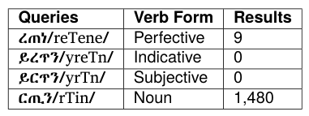
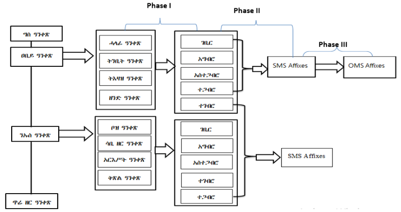
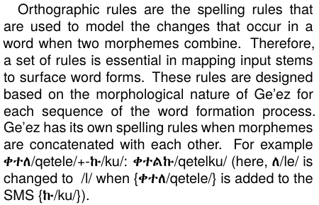
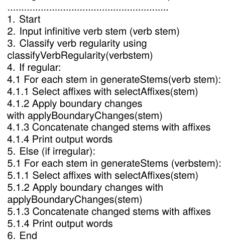
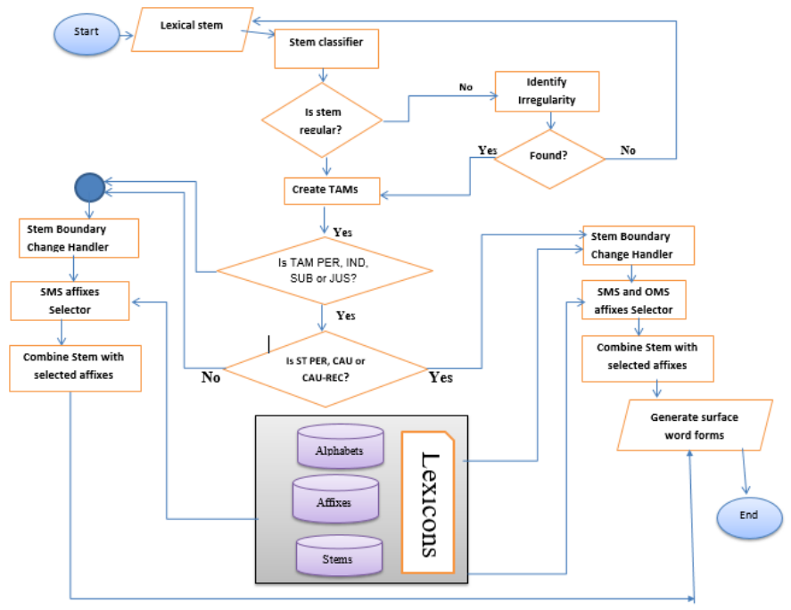
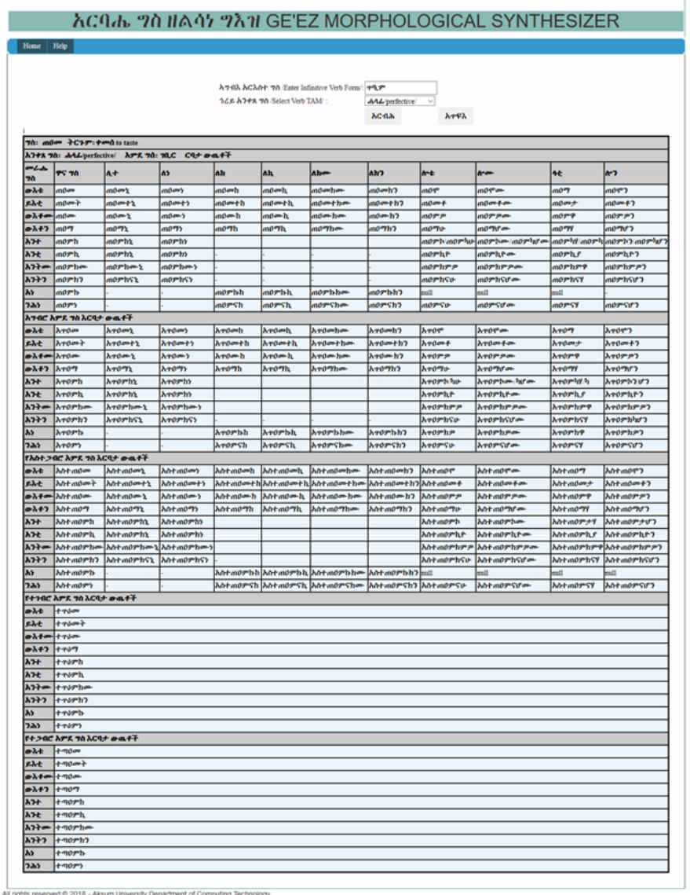

RAIL 2024Tafsiri ya mashine
Kisanisi cha Kimofolojia kwa Lugha ya Ge'ez: Kushughulikia Utata wa Kimofolojia na Ukomo wa Rasilimali
Tafsiri ya mashine, haijakaguliwa na binadamu. Makala asili ndiyo toleo la rejeo; sentensi zilizopigiwa mstari ni zile ambazo ukaguzi wa kiotomatiki haukuwa na uhakika nazo.
Proceedings of the Fifth Workshop on Resources for African Indigenous Languages @ LREC-COLING 2024.
Tafsiri ya Ernst van Gassen (Arktos AI Lab), yenye leseni CC BY-NC 4.0 kama makala asili. Matumizi tena yanaruhusiwa kwa kutaja mwandishi, kwa matumizi yasiyo ya kibiashara tu. Waandishi asili hawajakagua wala kuidhinisha tafsiri hii.
Maandishi matupu ya kutumia tena, pamoja na leseni yake: Kiswahili · LESENI
Taasisi
Gebrearegawi Gebremariam †, Hailay Teklehaymanot ∗
Gebregewergs Mezgebe†
†Axum University, Institute of Technology, Department of IT, Ethiopia
∗L3S Research Center, Leibniz University Hannover,Germany
teklehaymanot @l3s.de
Anwani za barua pepe zimeondolewa kwa sababu za faragha. Zinapatikana katika PDF asilia.
Muhtasari
Ge'ez ni lugha ya kale ya Kisemiti inayojulikana kwa alfabeti yake ya kipekee. Inatumika kama maandishi kwa lugha nyingi, zikiwemo Tigrinya na Amharic, na ilichukua nafasi muhimu katika maendeleo ya kitamaduni na kidini ya Ethiopia wakati wa enzi ya ufalme wa Aksumite. Ge'ez inabakia kuwa muhimu kama lugha ya kiliturujia nchini Ethiopia na Eritrea, huku nyaraka nyingi za utambulisho wa kitaifa zikiwa zimerekodiwa kwa Ge'ez. Nyenzo hizi zilizoandikwa ni vyanzo vya msingi visivyothaminika kwa kusoma falsafa, ubunifu, maarifa, na ustaarabu wa Ethiopia na Eritrea. Ge'ez ni lugha yenye mofolojia tata na mofolojia tajiri ya unyambuaji na uundaji, na hakuna NLP inayoweza kutumika ambayo imetengenezwa na kuchapishwa hadi sasa kutokana na uhaba wa data za lugha zilizofafanuliwa, korasi, seti za data zilizowekewa lebo, na leksika. Kwa hiyo, tulipendekeza usanisi wa kimofolojia wa Ge'ez unaotegemea kanuni ili kuzalisha maneno ya uso kutoka kwa maneno ya mzizi kulingana na miundo ya kimofolojia ya lugha. Kwa hiyo, tulipendekeza kisanisi otomatiki cha kimofolojia cha Ge'ez kwa kutumia TLM. Tulitumia vitenzi vya sampuli 1,102, vinavyowakilisha miundo yote ya kimofolojia ya vitenzi, ili kujaribu na kutathmini mfumo. Hatimaye, tunapata utendaji wa 97.4%. Matokeo haya yanazidi muundo wa msingi, ikipendekeza kwamba wasomi wengine wajenge mfumo mpana ukizingatia tofauti za kimofolojia za lugha.
Maneno Muhimu
Ge'ez, NLP, mofolojia, kisanisi kimofolojia, msingi wa kanuni
1. Utangulizi
Lugha ni mojawapo ya vipengele muhimu zaidi vya maisha yetu, kwani inatuwezesha kuhifadhi habari na kuipitisha kwa mdomo au kwa maandishi kutoka kizazi hadi kizazi (Allen, 1995).
Ge'ez ni lugha ya kale ya Kisemiti yenye alfabeti ya kipekee ("ኣ፣ በ፣ ገ፣ ደ") (Adege and Mannie, 2017; Siferew, 2013). Lugha hii ilichukua nafasi muhimu katika maendeleo ya kitamaduni na kidini ya Ethiopia na Eritrea wakati wa enzi ya Ufalme wa Aksumite. Mapokeo yake tajiri ya kifasihi na ushawishi wake katika kueneza Ukristo kote katika eneo hilo ni dhahiri. Ingawa haizungumzwi tena kwa mazungumzo baada ya karne ya kumi na tatu, Kige'ez bado ni muhimu kama lugha ya kiliturujia kwa makundi mbalimbali ya kidini. Wanazuoni na wanaisimu wanavutiwa na Kige'ez kwa ufahamu wake kuhusu mageuzi ya kihistoria ya lugha za Kisemiti na uhusiano wake na lugha kama vile Kiebrania, Kiarabu, na lugha ya kisasa ya Ethiopia na Eritrea (Dillmann na Bezold, 2003; Desta, 2010; Abate, 2014).
Mbali na kuwa lugha ya kiliturujia kwa makundi mbalimbali ya kidini nchini Ethiopia na Eritrea, Kige'ez bado ni lugha muhimu ya uandishi kwa vitabu vya kidini, kihistoria, na fasihi katika historia ya Ethiopia (Belcher, 2012; Scelta na Quezzaire-Belle, 2001). Rasilimali hizi zilizoandikwa zinaweza kuwa vyanzo vya msingi kwa ajili ya kusoma falsafa, ubunifu, maarifa, na ustaarabu wa Ethiopia na Eritrea. (Abate, 2014).
Kwa hiyo, kuhifadhi lugha ya Kige'ez inakuwa jambo la lazima ili kulinda urithi wa kitamaduni na kihistoria wa Ethiopia na Eritrea. Kwa kuwa lugha hiyo imefungamana kwa kina na desturi za kidini na fasihi, uhifadhi wake unahakikisha mwendelezo wa mila na utambulisho katika vizazi vyote. Mbali na hayo, kuhifadhi lugha ya Kige'ez ni muhimu kwa kudumisha desturi za kidini na mila za fasihi, kuheshimu utofauti wa lugha na utambulisho, kuchangia uelewa wa mageuzi ya lugha za Kisemiti, na kukuza fahari ya kitamaduni na mwendelezo katika vizazi vyote nchini Ethiopia na Eritrea (Desta, 2010).
Hata hivyo, utafiti wa lugha hii umeanza hivi karibuni tu, na hakuna teknolojia inayoweza kutumika iliyotengenezwa na kuchapishwa hadi sasa kwa Kige'ez kwa sababu umakini mdogo umetolewa kwa lugha hiyo, ingawa ni muhimu hivyo. Kutokana na hili, Ge'ez bado ni lugha yenye rasilimali chache na iliyo hatarini kutoweka (Eiselen na Gaustad, 2023; Haroutunian, 2022). Katika kunakili lugha zilizo hatarini kutoweka au kujenga upya lugha za kihistoria, kuelewa muundo wao wa kimofolojia ni muhimu kwa kuwakilisha na kuhifadhi kwa usahihi mifumo ya kiisimu (Bisang et al., 2006). Kwa lugha zenye utajiri wa kimofolojia kama vile Ge'ez, ni muhimu kuunda mfumo unaoweza kuzalisha maumbo yote ya maneno ya uso kutoka kwa maneno ya mizizi kwa sababu hii inaweza kutumika kama pembejeo kwa mifumo mingine mingi ya NLP, ikiwa ni pamoja na mifumo ya IR, ukaguzi wa tahajia na sarufi, utabiri wa maandishi, uundaji wa kamusi, uwekaji tagi za POS, tafsiri ya mashine, akili bandia ya mazungumzo, na mifumo mingine inayotegemea AI. Lakini, ni vigumu kuunda mifumo inayotegemea AI hasa kwa lugha zenye rasilimali chache kama vile Ge'ez, n.k. (Eiselen na Gaustad, 2023; Haroutunian, 2022; Gasser, 2012; Saranya, 2008; Scelta na Quezzaire-Belle, 2001; Sunil et al., 2012; Wintner, 2014).
Kwa mfano, zingatia matokeo ya utafutaji katika Jedwali 1 ili kutathmini kikomo cha mfumo wa IR katika utofauti wa maneno ya Ge'ez.

Jedwali 1: Maswali ya Ge'ez na matokeo yake kutoka kwa injini ya utafutaji ya Google
Kama inavyoonyeshwa katika Jedwali 1, matokeo yaliyopatikana katika kila swali ni tofauti, ingawa maswali yanahusiana na yametokana na kitenzi 'ረጠነ/reTene/'. Katika hali hii, hoja inapaswa kutolewa katika vibadala vyote vya maumbo ya maneno; kama sivyo, mfumo utashindwa kurejesha taarifa husika. Hata hivyo, si rahisi kutafuta maneno yote ya vibadala (Hailay, 2013). Ili kuboresha ufanisi wa mifumo ya IR, ni muhimu kuunda uhusiano imara kati ya mashina na maumbo yao ya maneno ya vibadala. Hivyo, ni muhimu kuunda kisanisi cha kimofolojia cha Ge'ez na kukiunganisha na mifumo ya IR ili kupata mfumo bora wa IR.
Kwa hiyo, tulipendekeza kisanisi cha kimofolojia cha Ge'ez kinachotegemea kanuni ambacho kinaweza kuchukua nafasi muhimu katika kuzalisha maneno ya uso kutoka kwa maneno ya mizizi kulingana na miundo ya kimofolojia ya lugha. Utafiti huu ni jaribio la kwanza la kuunda visanisi vya kimofolojia kwa lugha ya Ge'ez, ingawa visanisi vya kimofolojia kwa lugha nyingine vimeundwa na vinapatikana kwa matumizi mapana, kama ilivyoelezwa hapa chini katika sehemu ya kazi zinazohusiana. Kwa matokeo, kazi yetu imetoa michango muhimu ifuatayo kwa jamii ya kisayansi:
- i. Tulibuni algoriti kulingana na kanuni za kimofolojia za lugha ili kuonyesha uzalishaji wa vipengele vya TAM na PNG. Tulijaribu kuunda maneno ya uso kutoka kwa leksika. Jenereta hutumia alfabeti za Ge'ez Unicode bila kutafsiri kwa alfabeti za Kilatini. Hii inafanya iwe rahisi kutumia, hasa kwa wanafunzi na watafiti wa Ge'ez.
- ii. Tuliandaa seti za data za kwanza zinazopatikana kwa umma kwa ajili ya visanisi vya kimofolojia vya Ge'ez. Mtafiti mwingine anaweza kuitumia.
- iii. Mfumo wetu unatoa maana za Kiamhariki na Kiingereza kwa umbo kamili la kitenzi. Kwa hiyo, hii inaweza kuanzisha maendeleo ya miradi ifuatayo ya juu ya kamusi za Ge'ez-Kiamhariki, Ge'ez-Kitigrinya au Ge'ez-lugha nyingine.
2. Kazi Zinazohusiana
Moja ya maeneo maarufu zaidi ya utafiti katika NLP ni uchunguzi wa visanisi vya kimofolojia. Miradi kadhaa ya utafiti imefanywa katika eneo hili kwa lugha mbalimbali za kimataifa kwa kutumia mbinu tofauti (Abeshu, 2013; Koskenniemi, 1983). Hebu tuangalie baadhi ya kazi zinazohusiana.
ENGLEX ilitengenezwa ili kuzalisha na kutambua maneno ya Kiingereza kwa kutumia TLM katika PC-KIMMO. Ina vipengele vitatu muhimu, vikiwemo seti ya kanuni za kifonolojia (au kiothografia), leksika (mashina na viambishi), na vipengele vya sarufi vya neno. Jenereta hupokea maumbo ya kileksika kama vile spy + s kama ingizo na kurejesha neno la uso spies. Msimbo wa chanzo mtandaoni unapatikana hapa.
Jabalín ilitengenezwa kwa ajili ya kuchanganua na kuzalisha maumbo ya vitenzi vya Kiarabu kwa kutumia Python. Waliunda leksika ya viingizo 15,453. Hii iliundwa kwa kutumia mbinu inayotegemea sheria inayoitwa mofolojia ya mzizi-muundo. Jenereta ya kimofolojia inapokea lemma za vitenzi ili kutoa maumbo ya maneno yaliyonyambulishwa na ilipata Usahihi wa 99.52% kwa maneno sahihi (González Martínez et al., 2013).
Kwa kutumia mbinu inayotegemea dhana-mfano, Kichambuzi na Kisanisi cha Kimofolojia kwa Vitenzi vya Kimalayalam pia kiliendelezwa na (Saranya, 2008). Hii inasaidia katika kuunda mfumo wa tafsiri ya mashine wa Kiingereza-Kimalayalam.
Pymorphy2 ilitengenezwa kwa ajili ya uchanganuzi wa kimofolojia na uzalishaji wa lugha za Kirusi na Kiukreni (Korobov, 2015). Mfumo huo ulitumia leksika kubwa na zilizosimbwa kwa ufanisi zilizojengwa kutoka kwa data za Open-Corpora na LanguageTool. Seti ya sheria zenye msingi wa kilugha ilitengenezwa ili kuwezesha uchanganuzi wa kimofolojia na uzalishaji wa maneno yaliyo nje ya msamiati yanayoonekana katika nyaraka za ulimwengu halisi.
TelMore ilitengenezwa na (Ganapathiraju na Levin, 2006) ili kushughulikia uzalishaji wa kimofolojia wa nomino na vitenzi katika Kitelugu. Prototipu iliundwa kulingana na otomata ya hali finyu. TelMore inakubali umbo la kikitenzi lisilokamilika kwa aina za vitenzi na kuzalisha nyakati za sasa, zilizopita, na zijazo, maumbo ya kukubali, kukanusha, amri, na makatazo kwa jinsia na nambari zote. Zaidi ya hayo, (Dokkara et al., 2017) pia walitengeneza jenereta ya kimofolojia kwa lugha hii. Mfano wake wa kikompyuta ulitengenezwa kwa kuzingatia mbinu za hali finyu. Mfumo huo ulitathminiwa kwa jumla ya vitenzi 503. Kati ya vitenzi hivyo, maneno 418 yalikuwa sahihi, na maneno 85 hayakuwa sahihi.
(Goyal na Lehal, 2008) walitengeneza kichanganuzi na jenereta ya kimofolojia kwa Kihindi kwa kutumia mkabala wa dhana-mfano. Mfumo huu umetengenezwa kama sehemu ya mfumo wa tafsiri ya mashine kutoka Kihindi hadi Kipunjabi. (Gasser, 2012) alitengeneza mfumo unaozalisha maneno kwa maneno ya Kiamhara, Kioromo, na Kitigrinya kutoka kwenye mzizi na viambishi vilivyotolewa. Huu umetengenezwa kwa kuzingatia dhana ya teknolojia ya hali finyu. Mfumo huo ulitoa matokeo sahihi kwa asilimia 96 (Gasser, 2012).
Kisanisi cha kimofolojia kwa Kiamhara kilitengenezwa na (Lisanu, 2002) kwa kutumia mchanganyiko wa mbinu za msingi wa kanuni na za mtandao wa neva bandia. Hata hivyo, utafiti wake ulikuwa umejikita tu kwenye maumbo ya vitenzi timilifu vya Kiamhara. Baadhi ya maumbo ya maneno yaliyozalishwa yangeweza kuwa na maana zaidi. Pia, modeli hii ilitumia transliteresheni ya maandishi ya Kiamhara kwenda Kilatini kabla ya usanisi wowote kufanywa. Mfumo huo hauruhusu uzalishaji kwa mizizi mingine ambayo haijasajiliwa katika hifadhidata yake. Kwa upande mwingine, maneno yanazalishwa kama matokeo kwa kutoa mzizi na kiambishi tamati kama pembejeo. Hili linaweza kupunguza idadi ya maneno ambayo modeli inaweza kuzalisha ikilinganishwa na maneno yaliyotengenezwa na wataalamu wa lugha. (Lisanu, 2002).
(Abeshu, 2013) alitengeneza kisanisi kiotomatiki cha kimofolojia kwa Afan Oromoo kwa kutumia mchanganyiko wa mbinu zenye msingi wa CV na zenye msingi wa TLM na akapata utendaji wa 96.28 % kwa vitenzi na 97.46% kwa nomino. Utafiti ulionyesha kwamba kutengeneza kisanisi kiotomatiki kamili kwa Afan Oromoo kwa kutumia mbinu zenye msingi wa kanuni kunaweza kutoa matokeo bora. Na ni rahisi kupanua mfumo hadi aina nyingine za maneno kwa juhudi ndogo.
Visanisi vya kimofolojia vilivyopitiwa hapo juu ni mahususi kwa lugha yao husika na haviwezi kushughulikia sifa za kimofolojia za Ge'ez kwa sababu Ge'ez inatofautiana na lugha hizi. Kwa ufahamu wetu, hakuna utafiti uliofanywa wa kutengeneza jenereta kiotomatiki ya kimofolojia kwa lugha ya Ge'ez. Hivyo, tulipanga kuunda modeli ya kisanisi cha kimofolojia inayoweza kuzalisha mofolojia ya unyambulishaji na uambishaji wa vitenzi vya lugha ya Ge'ez.
3. Mofolojia ya Ge'ez
Lugha ya Ge'ez ina muundo tata wa kimofolojia kwa sababu neno moja linaweza kuonekana katika maumbo mengi tofauti na kuwasilisha maana tofauti kwa kuongeza viambishi au kubadilisha mifumo ya kifonolojia ya neno (Adege and Mannie, 2017). Hasa, vitenzi vina muundo tata zaidi kuliko POS nyingine katika Ge'ez. Hivyo, vitenzi vya Ge'ez vimegawanywa katika makundi sita makuu katika maumbo yake yanayoitwa maumbo ya vitenzi vya timilifu, dhihirishi, isiyokoma, tegemezi, amrisho, na kielezi cha hali. Kila umbo la kitenzi lina madarasa matano ya mashina, na kila shina la kitenzi litanyambulika kwa kuongeza viambishi ili kuunda maumbo tofauti ya maneno (Desta, 2010). Kwa ujumla, kuna awamu tatu za kuunda maumbo mbalimbali ya maneno katika Ge'ez, kama inavyofafanuliwa katika (Dillmann and Bezold, 2003). Haya yametolewa hapa chini, kama yanavyoonyeshwa katika Kielelezo 1:
Awamu ya I: Uundaji wa shina
Awamu ya II: Uundaji wa TAM
Awamu ya III: Uundaji wa PNG
Katika Awamu ya I, utangazaji wa maumbo ya maneno kwa kutumia Tense-Mood kama safu mlalo na mashina matano kama safu wima unafanywa.
Katika Awamu ya II, kila umbo la kitenzi la juu lililopatikana kutoka Awamu ya I linatangazwa zaidi kwa kutumia viwakilishi kumi vya nafsi kwa kuambatisha kiambishi tamati cha alama ya kiima.
Katika Awamu ya III, utangazaji wa maumbo ya maneno kwa kutumia Viambishi Tamati Kumi vya Mtengenezaji wa Yambwa kwa kila neno lililopatikana katika Awamu ya II utatokea.
Kwa hiyo, kanuni mbili za kuambisha viambishi tamati kwa vitenzi zinatawala mchakato wa uunganishaji wa mofimu ili kutoa maumbo ya vitenzi vya uso:
Stem + subject-marker suffix = surface word (only with SMS)
Stem + subject-marker suffix + object-indicator suffix = surface word (with both SMS and OMS)
Kwa hivyo, tunaweza kuwa na maumbo mawili ya vitenzi, moja likiwa na alama ya kiima ya moja kwa moja pekee na lingine likiwa na viambishi tamati vya alama ya kiima na alama ya yambwa, kama inavyoonyeshwa hapa chini:
ቀተል (stem) + ክሙ (subject marker suffix) = ቀተልክሙ - you killed. (Surface Form).
ቀተል (stem) + ክሙ (object marker suffix) = ቀተለክሙ - he killed you (Surface Form).
ቀተል (stem) + ክሙ (SMS) + ኒ (OMS) = ቀተልክሙኒ - you killed me (Surface Form).
Katika hali hii, kiambishi tamati cha alama ya kiima /-ክሙ/ kinaonyesha kwamba kiima ni "wewe (2 ppm)," ilhali alama ya yambwa /-ኒ/ inaonyesha yambwa "mimi.". Kwa hiyo, kitenzi /ቀተልክሙኒ/ kinaonyesha kiima na yambwa ya kitenzi. Kwa hiyo, kitenzi kimoja kinaweza kuwa sentensi katika Ge'ez kwa sababu kina viambishi tamati vya kuonyesha kiima na yambwa.
4. Mbinu ya utafiti
Tumepitia vitabu kadhaa, ripoti za utafiti, majarida, makala, na miongozo ya watumiaji ili kuelewa muundo wa kimofolojia wa vitenzi vya Ge'ez na kujua mbinu mbalimbali za kubuni visanisi vya kimofolojia. Aidha, mijadala endelevu ilifanyika na wataalamu wa Ge'ez ili kuelewa vyema muundo wa kimofolojia wa lugha hiyo na kupata mawazo muhimu kwa ajili ya utafiti.

Kielelezo 1: Awamu za uundaji wa neno la kimofolojia la Ge'ez
4.1. Ukusanyaji wa Data
Data zilizofafanuliwa kwa mikono katika leksika husaidia kujaribu kisanisi cha kimofolojia. Kwa kuwa kamusi zinazosomeka kwa mashine na orodha za maneno au korasi ya mtandaoni ya Ge'ez hazikuwepo, kazi ya kukusanya leksika ilianza kutoka mwanzo kabisa. Hivyo, tumekusanya sampuli za vitenzi wakilishi vinavyobainisha tofauti zote za vitenzi kwa ajili ya kupima na kutathmini utendaji wa mfumo kwa kushauriana na wataalamu wa lugha. Vitenzi hivi vimekusanywa kutoka vitabu mbalimbali, kama vile Biblia Takatifu, መጽሐፈ ግስ/Ge'ez Grammar Book/, na kutoka lsanate siem (ልሳናተ ሴም) (Zeradawit, 2017). Kwa hiyo, leksimu ya lugha iliyoandaliwa kwa ajili ya utafiti huu ina jumla ya vitenzi 1102 vya kawaida na visivyo vya kawaida. Viambishi vinavyoweza kuambatanishwa na vitenzi pia vimekusanywa katika leksimu.
4.2. Ubunifu
Kama ilivyofafanuliwa na (Pulman et al., 1988), ni lazima kuzingatia angalau mahitaji yafuatayo ya msingi ya usanifu ili kuunda kisanisi cha kimofolojia cha lugha:
- Leksimu:
Leksimu inaelezea orodha ya lemma zote na maumbo yake yote. Ni kiini cha mfumo wowote wa uchakataji wa lugha asilia, ingawa muundo wake hutofautiana kulingana na mahitaji yao. Kwa hiyo, leksimu zinazohitajika kwa utafiti wetu zinajumuisha mashina, viambishi, na alfabeti za Ge'ez. Hebu tuyaone kila mojawapo ya leksika hizi kwa undani. i. Mashina: Katika utafiti wetu, pembejeo za shina ni maumbo ya vitenzi visivyokamilika kama vile ቀቲል/kuua/, ሐዊር/kutembea/, ሰጊድ/kusujudu/, ፈቂድ/kuruhusu/, ሐዪው/kutokwa mate/, n.k. Kutokana na pembejeo hizi za kileksika, mfumo huzalisha maneno yaliyonyambulika kwa jinsia na namba zote kwa kuyaunganisha na viambishi vinavyolingana kulingana na seti ya kanuni za lugha. Sababu ya sisi kutaka kutumia umbo la kitenzi kisichokamilika kama pembejeo badala ya neno la mzizi/ጥሬ ዘር/ ni kuondoa utata unaoweza kujitokeza wakati mfano unapotofautisha kategoria ya kitenzi cha pembejeo.
ii. Viambishi: Kama inavyofafanuliwa na (Abebe, 2010), viambishi hubeba aina tofauti za taarifa za kisintaksia na kisemantiki, zikisaidia kuunda maneno mbalimbali. Viambishi huungana na mashina ya maneno ili kuzalisha maneno mbalimbali kulingana na seti ya kanuni. Hapa, Viambishi Awali vya Kiashiria Shina la Kitenzi na Viambishi Awali vya Kiashiria Nafsi huunganishwa kwanza na shina la pembejeo ili kuzalisha mashina mbalimbali ya maneno (Abebe, 2010). Kisha, viambishi tamati vya SMS na OMS hufuata kwa mfuatano. Kwa mfano, zingatia uundaji wa ይቀትለከ /Atakuua/ kwa kutumia TLM katika Jedwali 2.
Kama inavyoonyeshwa katika Jedwali 2, kwa kila shina kuungana na viambishi, mchanganuzi anapaswa kuchunguza aina ya shina na viambishi vinavyoweza kuambatana ipasavyo ili kuunda maneno halali ya uso. Kwa hiyo, seti ya kanuni ilianzishwa ili kushughulikia mahitaji hayo.
iii. Alfabeti za Ge'ez: Kama ilivyoelezwa na (Koskenniemi, 1983), maneno ya kiwango cha kileksika na ya usoni katika modeli ya ngazi mbili ni mifuatano iliyotolewa kutoka kwa alfabeti za lugha. Mifuatano ya kiwango cha kileksika inaweza kuwa na baadhi ya herufi ambazo huenda zisitokee kwenye mifuatano ya kiwango cha usoni. Kwa mujibu wa hayo, maneno ya Ge'ez hujengwa kwa muunganisho wenye maana wa alfabeti za Ge'ez. Alfabeti katika lugha ya Ge'ez zinajumuisha herufi zote kuanzia ሀ/he/ hadi ፈ/fe/ na alfabeti nne nyingine za mchanganyiko tata. Mabadilishano yote ya herufi katika mifuatano ya kileksika wakati wa uundaji wa maneno ya usoni huchukuliwa kutoka kwa alfabeti hizi. Utekelezaji wa mabadiliko haya unashughulikiwa kulingana na kanuni katika prototaiti ya mfumo. Sheria za ngazi-mbili zinatumika hapa kubainisha tofauti zinazoruhusiwa kati ya uwakilishi wa neno wa kileksika na wa usoni.
- Morfotaktiki:
Mofotaktiki ni kielelezo au sheria ya mpangilio wa mofimu inayoeleza ni aina zipi za mofimu zinaweza kufuata aina nyingine za mofimu ndani ya neno. Vitenzi vya Ge'ez vina sheria zao wenyewe za kupanga mofimu. Mpangilio wa mofimu katika uundaji wa neno wa vitenzi vya Ge'ez ni kama ifuatavyo:
[Kiambishi awali] + [Viambishi awali vya mzingo] + [shina] + [Viambishi tamati vya mzingo] + [SMS] + [OMS]
- Kanuni za Tahajia:

Kwa kuzingatia mahitaji ya muundo hapo juu, tulibuni chati ya mtiririko wa jumla ya mfumo kama inavyoonyeshwa katika Kielelezo 2: Kama tunavyoona katika chati ya mtiririko katika Kielelezo 2, muundo wa kisanisi cha kimofolojia una vipengele vifuatavyo:
A.Kiainishi cha Shina: hutambua kategoria ya kitenzi ya shina. Uainishaji unafanywa kwa kuzingatia idadi ya vichwa na makundi ya vitenzi. Kipengele hiki pia huangalia kama shina la kitenzi ni la kawaida au la. Hapa, ikiwa kitenzi cha pembejeo kina mojawapo ya alfabeti za kooni (yaani ሀ/he/, ሐ/He/, ኀ/H/, አ/a/ na ዐ/A/ ama mwanzoni au katikati mwao) au alfabeti za nusu-irabu (yaani የ/ye/ na ወ/we/) katika nafasi yoyote ya kitenzi, ni kisicho cha kawaida, la sivyo ni kitenzi cha kawaida.
B.Uundaji wa Mashina: Kipengele hiki kidogo huzalisha mashina mbalimbali yaliyotoholewa kwa ajili ya pembejeo ya kileksika.
C.Kijenzi cha Sahihi: huorodhesha seti ya viambishi tamati halali kwa kila shina lililozalishwa kwa sababu kila shina lililoundwa lina viambishi maalum vinavyolingana na shina wakati wa uundaji halali wa neno la uso. Ili kuanzisha muunganisho halali wa mashina na viambishi, utaratibu wa kulinganisha muundo unatumika, ambao unategemea dhana ya kulinganisha mashina na viambishi vyake halali. Kwa mfano, neno 'ይቀትል'/yqetl/ lina kiambishi halali 'ዎ'/wo/ ili kuunda umbo halali la neno. Lakini, neno hili haliwezi kuunganishwa na kiambishi 'ክዎ'/kwo/ kwa sababu muunganiko wa neno na kiambishi hauwezi kuunda maumbo halali ya neno.
D. Kidhibiti Mabadiliko ya Mipaka: Kipengele hiki kidogo kinashughulikia mifumo ya mipaka inayotokea wakati wa muunganiko wa mashina na viambishi kulingana na kanuni zilizowekwa kwenye hifadhi ya maarifa. Mabadiliko haya yanaweza kuwa mahususi kwa kila muunganiko wa mofimu, hata kama mofimu hizi ziko katika namna ileile. Athari za kiassimilesheni hutokea hasa kwenye mpaka wa mofimu wakati viambishi tamati ከ /ke/, ኩ /ku/, ኪ /ki/, ክን /kn/ au ክሙ /kmu/ vinapoongezwa mwishoni mwa kitenzi kinachoishia na mojawapo ya alfabeti za glotali, yaani ቀ /QE/, ከ /ke/, au ገ /Ge/ (Lambdin, 1978). Kwa mfano, angalia muunganiko wa mofimu ሐደገ na ክሙ:
ሐደገ + ክሙ -> ሐደግሙ (herufi ገ katika ሐደገ inabadilika kuwa ግ na herufi ክ inaachwa kutoka kwenye mofimu ክሙ)
E. Kisanisi: Kipengele hiki kidogo huzalisha maumbo yote ya neno ya uso yanayowezekana kwa kuunganisha shina na orodha iliyochaguliwa ya viambishi kwa kutumia mbinu ya TLM ya uzalishaji wa maneno. Kwa mfano, zingatia uzalishaji wa neno la Kige'ez ufuatao kwa TLM kutoka Jedwali 2:

Jedwali la 2: Uzalishaji wa maneno ya uso kwa kutumia TLM
Safu katika Jedwali la 2 zinaonyesha upangaji wa viwango viwili unaofanywa wakati wa mchakato wa uundaji wa neno.
F. Kiwango cha Uso: Mwishowe, matokeo ya kisanisi yanazalishwa.
Hapa chini ni algoriti yetu fupi ya kuzalisha maumbo ya maneno kulingana na leksimu za pembejeo:

5. Majaribio na Tathmini
5.1. Mbinu ya Kimaendeleo
Mbinu kadhaa zingeweza kutumika katika kutengeneza mifumo ya uzalishaji wa kimofolojia kwa lugha tofauti. Kama ilivyojadiliwa na (Kazakov na Manandhar, 2001), mbinu hizi zinaweza kuainishwa kama mbinu za kikanuni na mbinu za kikorasi. Utafiti huu ulitumia mbinu ya kikanuni iitwayo Mfano wa Ngazi Mbili (TLM) wa mofolojia kutengeneza mfano wa awali. TLM inatumika kushughulikia michakato ya kifonolojia na kimofofonolojia (ikijumuisha mabadiliko ya uimilishaji) inayohusika katika uundaji wa neno (Gasser, 2011; Koskenniemi, 1984). Kimsingi, tulichagua mbinu ya TLM ili kuoanisha viingizi vya kileksika na maumbo ya vitenzi vya uso. Tulitumia mbinu ya kikanuni kutengeneza kisanisi cha kimofolojia cha lugha kwa sababu mbinu hii ina mchakato wa kimaendeleo wa haraka wenye Usahihi bora, ni rahisi zaidi kurekebishwa, na inafikika zaidi kwa kuunda kanuni kulingana na kanuni za lugha (Beesley na Karttunen; Shaalan et al., 2007). Zaidi ya hayo, njia inayotegemea kanuni ni ya vitendo kwa lugha zenye rasilimali chache, kama vile Ge'ez, ambayo inakumbwa na upatikanaji wa korasi na ukosefu wa data (Shaalan et al., 2010). Hivyo, tulipendelea mbinu inayotegemea kanuni, ambapo neno fulani hutolewa kama ingizo kwa kisanisi cha kimofolojia, na ikiwa mofimu au neno la mzizi linalolingana ni halali, basi mfumo utazalisha maumbo ya neno la uso.

Kielelezo 2: Chati ya Mtiririko ya kisanisi cha kimofolojia cha Ge'ez
5.2. Taratibu za Upimaji
Ukadiriaji wa utaratibu wa mfumo huo ni tata kwa kuwa hakuna maneno yaliyokusanywa ya Ge'ez yanayopatikana sasa kwa kusudi hili. Kwa hivyo, ili kupima ufanisi wa mfumo uliotengenezwa, tulitumia vitenzi vya sampuli vilivyokusanywa. Taratibu za upimaji ni kama ifuatavyo:
1. Katika awamu ya awali, tulitathmini mfumo kwa kuingiza shina la majaribio lililotolewa kutoka kwa vitenzi vya sampuli katika leksimu, kuzalisha maneno, na kuyalinganisha na maumbo yao ya neno yanayotarajiwa. Tathmini hii ilifanyika kwa kurudia katika kipindi chote cha uundaji wa kisanisi cha kimofolojia ili kuboresha utendaji wake. Makosa yoyote yaliyotambuliwa wakati wa jaribio hili, hasa yanayohusiana na kanuni zilizokosekana, yalirekebishwa ipasavyo. Marudio yaliyofuata ya jaribio hili yalifanyika hadi matokeo ya kuridhisha yalipopatikana.
2.Kisha, utendaji wa mfumo uliokamilishwa ulijaribiwa kwa kuingiza vitenzi vya mfano (vikiwemo vile vyenye herufi za glotali au irabu-nusu katika nafasi tofauti) vilivyochaguliwa na wanaisimu.
5.3. Taratibu za Tathmini
Hatimaye, tulitathmini kwa kuchukua vitenzi vya kawaida na visivyo vya kawaida kutoka kwa vitenzi vya mfano vilivyochaguliwa. Ili kutathmini mfumo, tulitumia chaguzi mbili:
1.Tathmini kwa Mikono Kwa kutumia mbinu ya kuhesabu makosa, wataalamu wa lugha walitathmini kwa mikono maneno yaliyozalishwa ili kupima usahihi na ubora wake. Usahihi wa mfumo kisha hukokotolewa kama idadi ya maneno yaliyozalishwa kwa usahihi ikigawanywa kwa jumla ya idadi ya maneno yaliyozalishwa na mfumo ikizidishwa kwa 100%.
2.Tathmini ya Kiotomatiki Tunatathmini utendaji wa mfumo kwa kutumia vigezo na vipimo vilivyoainishwa awali bila uingiliaji wa binadamu, mbinu inayofanana na ile iliyoelezwa na (González Martínez et al., 2013). Baadaye, usahihi uliopatikana kutoka kwa kila jaribio hukokotolewa kwa kutumia fomula ifuatayo:

6. Matokeo ya Majaribio
Tathmini ya usahihi wa mfumo uliotengenezwa ilihusisha kuingiza seti za data za sampuli. Maneno 7,577 yalizalishwa kutoka kwa vitenzi vya kawaida, na maneno 19,290 yalizalishwa kutoka kwa vitenzi visivyo vya kawaida. Kati ya hayo, makosa 668 yalitambuliwa (8 kutoka kwa vitenzi vya kawaida na 661 kutoka kwa vitenzi visivyo vya kawaida). Viwango vya usahihi vilikuwa: 99.6% kwa vitenzi vya kawaida na 96.6% kwa vitenzi visivyo vya kawaida. Kusababisha usahihi wa wastani wa jumla wa 97.4%. Matokeo haya yanazidi kiwango cha msingi (Abeshu, 2013). Asilimia ya maneno yenye makosa ilikuwa 2.6%. Matokeo haya ya kuahidi yanaunga mkono utafiti zaidi kuhusu lugha hiyo. Matokeo ya majaribio yanapatikana na yamerejelewa katika sehemu ya Kiambatisho.
7. Mjadala
Mfumo huu mara kwa mara huzalisha maneno sahihi, ingawa kuna makosa ya mara kwa mara. Kama Kiambatisho I kinavyoeleza kwa kina, vitenzi visivyo vya kawaida hufanya kazi chini ya vitenzi vya kawaida, hasa kutokana na unyumbufu wao wa asili katika michakato ya uundaji wa maneno. Kutawala kwa vitenzi visivyo vya kawaida katika seti ya data ya tathmini kunachangia kupungua kwa usahihi kulikoonekana. Kama sehemu kubwa zaidi ya vitenzi vya kawaida ingejumuishwa katika tathmini, Usahihi ungetarajiwa kuzidi 97.4%, kutokana na kiwango cha juu cha Usahihi cha 99.6% kilichozingatiwa kwa maneno yanayozalishwa kutoka kwa vitenzi vya kawaida.
7.1. Mambo Yanayopelekea Utendaji wa Juu.
Licha ya kukumbana na baadhi ya makosa, kisanisi kinaonyesha utendaji wa juu sana. Mafanikio haya yanaweza kuhusishwa na mambo kadhaa:
1.Kuunda mashina sahihi Mashina yanayozalishwa kwa usahihi huzalisha maneno sahihi ya uso ikiwa mabadiliko ya mpaka yanayotokea wakati wa kuunganisha shina na kiambishi yanashughulikiwa kwa usahihi. Kama mashina ya mizizi yameundwa kikamilifu, basi maneno yanayozalishwa kutoka kwa mashina haya ni sahihi. Kwa hiyo, utendaji uliopatikana ni wa juu kwa sababu mashina mengi yaliyosababishwa ni sahihi, na mabadiliko ya mpaka yanashughulikiwa kwa usahihi.
2. Kushughulikia sheria wakati mofimu zinaunganishwa kwa kila mmoja Maneno sahihi huzalishwa wakati mashina na viambishi vinaunganishwa ipasavyo. Kwa sababu hii, uteuzi wa viambishi kwa shina husika ulishughulikiwa ipasavyo. Kwa hiyo, kushughulikia seti ya kanuni za uundaji wa neno ipasavyo kutazalisha maneno sahihi.
3. Kushughulikia kanuni za uundaji wa neno usio wa kawaida Lugha ya Ge'ez ina vitenzi vingi visivyo vya kawaida. Vitenzi visivyo vya kawaida ni vile ambavyo vina mabadiliko kidogo katika muundo wao wa kimofolojia ikilinganishwa na vitenzi vya kawaida. Hii inatokea zaidi kutokana na kuwepo kwa mojawapo ya alfabeti za kooni, yaani ሀ/he/, ሐ/He/, ኀ/H/, አ/a/ na ዐ/A/ ama katika nafasi zao za mwanzo au za kati, au kuwepo kwa alfabeti za nusu-vokali, yaani የ/ye/ na ወ/we/ katika nafasi yoyote ya vitenzi. Vitenzi visivyo vya kawaida vina kanuni mbalimbali za kuzalisha maumbo sahihi ya neno. Kanuni hizi zina tofauti ndogo kutoka kwa kanuni hizi za uundaji wa neno za kawaida. Kushughulikia kanuni hizi za uundaji wa neno kunakupa Usahihi bora. Kwa hiyo, tumejaribu kushughulikia sheria za uundaji wa neno kadiri inavyowezekana.
7.2. Uchambuzi wa Makosa
Maneno fulani yanazalishwa kimakosa. Makosa haya yanaweza kuhusishwa na sababu zifuatazo:
1. Makosa yanayosababishwa na herufi za kipekee zilizopo katika kitenzi Baadhi ya vitenzi vina sifa maalum, ingawa vitenzi hivi vinaonekana kuwa na umbo sawa na kitenzi kikuu. Kwa mfano, mfumo uliundwa kushughulikia vitenzi vinavyoishia kwa herufi ቀ/qe/, ከ/ke/, na ገ/ge/ kwa sababu inadhaniwa kuwa vitenzi hivi vina sifa sawa za kimofolojia kama vitenzi vingine. Hata hivyo, hii inaweza isiwe kweli kila wakati ikiwa tutazingatia muundo wa kimofolojia wa vitenzi ሠረቀ/šereqe/, ሐደገ/Hedege/, na ለሐቀ/leHeqe/. Vitenzi hivi vina tofauti kutokana na kuwepo kwa herufi za kooni au nusu-vokali, au vyote kama inavyoonyeshwa katika Jedwali 3.

Jedwali la 3: Makosa yanayosababishwa na herufi za kipekee
Kama tunavyoona katika jedwali la 3, herufi zilizoandikwa kwa rangi nyekundu katika maneno hufanya tofauti katika kila mchakato wa uundaji wa neno ingawa maneno haya yameainishwa katika kategoria ileile ya vitenzi.
- Makosa yaliyotokana na muunganisho wa maneno maalum na viambishi
Baadhi ya maneno yanayozalishwa yanaonekana kuwa sahihi kisarufi na kimaana, lakini si maneno sahihi. Kwa mfano, mofimu ከረም/kerem/ na ነ/ne/ zinapounganishwa, hutoa neno ከረምነ/keremne/ ambalo ni neno sahihi. Vivyo hivyo, mofimu አመን/amen/ + ነ/ne/ zinapounganishwa, hutoa አመንነ/ amenne/. Hata hivyo, አመንነ/ amenne/ si neno sahihi. Neno sahihi ni አመነ/amene/. Kwa hivyo, maneno haya yana maumbo tofauti ingawa yanahusishwa na POS na idadi sawa.
3. Makosa yanayosababishwa na utajiri wa kimofolojia na asili ya lugha iliyo tofauti
Aina hii ya hitilafu hutokea wakati wa kujaribu vitenzi ambavyo vinaonekana kuwa na muundo sawa na vitenzi vingine kimaumbile. Lakini matokeo yao halisi yanaonyesha maumbo tofauti ya maneno. Kwa mfano, tunapochukua vitenzi ወለደ/welede/ na ወቀሰ/weqese/, tunadhani kwamba vitenzi hivi vina muundo sawa wakati wa kubuni mfano wa awali. Lakini vitenzi hivi vina tofauti katika muundo wao halisi wa uundaji wa maneno.
4. Hitilafu zinazosababishwa na kukosekana kwa baadhi ya sheria Uundaji wa maumbo tofauti ya maneno una seti ya sheria. Kukosekana kwa yoyote ya sheria hizi huzalisha maumbo batili ya maneno. Maneno yasiyo sahihi katika Jedwali la 4 yanazalishwa kwa sababu baadhi ya sheria na maumbo yao sahihi hayapo.

Jedwali la 4: Hitilafu zinazosababishwa na kukosekana kwa sheria
8. Hitimisho na Kazi za Baadaye
Utafiti ulichagua mbinu ya TLM inayotegemea sheria kwa ajili ya kutengeneza kisanisi kiotomatiki cha kimofolojia kutokana na urahisi wake, ufaafu wake, na ufanisi wake, hasa kwa lugha zenye upatikanaji mdogo wa korasi. Seti ya sheria ilibuniwa kwa umakini mkubwa kwa kuzingatia maarifa ya kitaalamu ya muundo wa kimofolojia wa lugha, ikiunda msingi wa uundaji wa algoriti kutoka mwanzo ili kushughulikia michakato ya uundaji wa maneno. Licha ya ukamilifu wa sheria za usanisi wa kimofolojia, baadhi ya makosa yaliendelea kuwepo katika uzalishaji wa maneno, hasa yakitokana na uundaji wa mashina batili, hasa kwa vitenzi visivyo vya kawaida vyenye herufi za koo na irabu nusu. Hata hivyo, kisanisi cha mfano kilionyesha utendaji wa kuahidi, kwa usahihi wa jumla wa 97.4%, ikionyesha matarajio ya kutia moyo kwa utafiti zaidi katika isimu ya Ge'ez. Maoni kutoka kwa wanaisimu walioshiriki katika tathmini ya mfumo yalisisitiza umuhimu wa kutengeneza toleo kamili la mfumo ili kuimarisha matumizi na uhifadhi wa Ge'ez ndani ya jamii. Mapendekezo yalitolewa kwa watafiti wa baadaye kushughulikia na kurekebisha makosa yanayozuia utendaji wa utafiti na kusonga mbele kuelekea mfumo unaofanya kazi kikamilifu. Changamoto zilizojitokeza wakati wa utafiti zilijumuisha: Ukosefu wa wataalamu wa isimu ya Ge'ez. Kutokuwepo kwa marejeleo sanifu na kamusi. Uhaba wa leksimu za lugha ya Ge'ez zilizokusanywa. Zaidi ya hayo, utata na asili ya mofolojia ya Ge'ez ya kuambatanisha viambishi viliweka vikwazo vya ziada, vikichangia msamiati wake mpana.

Maelezo
1 http://downloads.sil.org/legacy/pckimmo/engl20b5.zip
Marejeo
Yitayal Abate. 2014. Morphological analysis of ge'ez verbs using memory based learning.
A. Abebe. 2010. Automatic morphological synthesizer for afaan oromoo. A thesis Submitted to School of Graduate Studies of addis ababa University in Partial fulfillment for degree masters of Science in Computer Science.
Abebe Abeshu. 2013. Analysis of rule based approach for afan oromo automatic morphological synthesizer. Science, Technology and Arts Research Journal, 2(4):94-97.
Abebe Belay Adege and Yibeltal Chanie Mannie. 2017. Designing a Stemmer for Ge'ez Text Using Rule based Approach. LAP LAMBERT Academic Publishing.
James Allen. 1995. Natural language understanding. Benjamin-Cummings Publishing Co., Inc.
Kenneth R Beesley and Lauri Karttunen. Finite-state morphology: Xerox tools and techniques. CSLI, Stanford, pages 359-375.
Wendy Laura Belcher. 2012. Abyssinia's Samuel Johnson: Ethiopian Thought in the Making of an English Author. OUP USA.
Walter Bisang, Hans Henrich Hock, Werner Winter, Jost Gippert, Nikolaus P Himmelmann, and Ulrike Mosel. 2006. Essentials of language documentation. Mouton de Gruyter.
Berihu Weldegiorgis Desta. 2010. Design and Implementation of Automatic Morphological Analyzer for Ge'ez Verbs. Ph.D. thesis, Addis Ababa University.
August Dillmann and Carl Bezold. 2003. Ethiopic grammar. Wipf and Stock Publishers.
Sasi Raja Sekhar Dokkara, Suresh Varma Penumathsa, and Somayajulu G Sripada. 2017. Verb morphological generator for telugu. Indian Journal of Science and Technology, 10:13.
Roald Eiselen and Tanja Gaustad. 2023. Deep learning and low-resource languages: How much data is enough? a case study of three linguistically distinct south african languages. In Proceedings of the Fourth workshop on Resources for African Indigenous Languages (RAIL 2023), pages 42-53.
Fitsum Gaim, Wonsuk Yang, and Jong C Park. 2022. Geezswitch: Language identification in typologically related low-resourced east african languages. In Proceedings of the Thirteenth Language Resources and Evaluation Conference, pages 6578-6584.
Madhavi Ganapathiraju and Lori Levin. 2006. Telmore: Morphological generator for telugu nouns and verbs. In Proceedings of the Second International Conference on Digital Libraries.
Michael Gasser. 2011. Hornmorpho: a system for morphological processing of amharic, oromo, and tigrinya. In Conference on Human Language Technology for Development, Alexandria, Egypt, pages 94-99.
Michael Gasser. 2012. Hornmorpho 2.5 user's guide. Indiana University, Indiana.
Alicia González Martínez, Susana López Hervás, Doaa Samy, Carlos G Arques, and Antonio Moreno Sandoval. 2013. Jabalín: a comprehensive computational model of modern standard arabic verbal morphology based on traditional arabic prosody. In Systems and Frameworks for Computational Morphology: Third International Workshop, SFCM 2013, Berlin, Germany, September 6, 2013 Proceedings 3, pages 35-52. Springer.
Alicia González Martínez, Susana López Hervás, Doaa Samy, Carlos G. Arques, and Antonio Moreno Sandoval. 2013. Jabalín: A comprehensive computational model of modern standard arabic verbal morphology based on traditional arabic prosody. In Systems and Frameworks for Computational Morphology, pages 35-52, Berlin, Heidelberg. Springer Berlin Heidelberg.
Vishal Goyal and Gurpreet Singh Lehal. 2008. Hindi morphological analyzer and generator. In 2008 First International Conference on Emerging Trends in Engineering and Technology, pages 1156-1159. IEEE.
B. Hailay. 2013. Design and development of tigrigna search engine. A thesis Submitted to School of Graduate Studies of addis ababa University in Partial fulfillment for the Degree of Master of Science in Computer Science.
Levon Haroutunian. 2022. Ethical considerations for low-resourced machine translation. In Proceedings of the 60th Annual Meeting of the Association for Computational Linguistics: Student Research Workshop, pages 44-54.
Dimitar Kazakov and Suresh Manandhar. 2001. Unsupervised learning of word segmentation rules with genetic algorithms and inductive logic programming. Machine Learning, 43:121-162.
Mikhail Korobov. 2015. Morphological analyzer and generator for russian and ukrainian languages. In Analysis of Images, Social Networks and Texts: 4th International Conference, AIST 2015, Yekaterinburg, Russia, April 9-11, 2015, Revised Selected Papers 4, pages 320-332. Springer.
Kimmo Koskenniemi. 1983. Two-level morphology: A general computational model for word-form recognition and production. University of Helsinki. Department of General Linguistics.
Kimmo Koskenniemi. 1984. A general computational model for word-form recognition and production. In 10th International Conference on Computational Linguistics and 22nd Annual Meeting of the Association for Computational Linguistics. The Association for Computational Linguistics.
Thomas O. Lambdin. 1978. Introduction to Classical Ethiopic (Ge'ez). Harvard Semitic Studies - HSS 24.
K Lisanu. 2002. Design and development of automatic morphological synthesizer for Amharic perfective verb forms. Ph.D. thesis, Master's thesis, school of Information Studies for Africa, Addis Ababa.
Stephen G Pulman, Graham J RUSSELL, Graeme D Ritchie, and Alan W Black. 1988. Computational morphology of english.
SK Saranya. 2008. Morphological analyzer for malayalam verbs. Unpublished M. Tech Thesis, Amrita School of Engineering, Coimbatore.
Gabriella F Scelta and Pilar Quezzaire-Belle. 2001. The comparative origin and usage of the ge'ez writing system of ethiopia. Unpublished manuscript, Boston University, Boston. Retrieved July, 25:2009.
Khaled Shaalan, Azza Abdel Monem, and Ahmed Rafea. 2007. Arabic morphological generation from interlingua: A rule-based approach. In Intelligent Information Processing III: IFIP TC12 International Conference on Intelligent Information Processing (IIP 2006), September 20-23, Adelaide, Australia 3, pages 441-451. Springer.
Khaled Shaalan et al. 2010. Rule-based approach in arabic natural language processing. The International Journal on Information and Communication Technologies (IJICT), 3(3):11-19.
Muluken Andualem Siferew. 2013. Comparative classification of Ge'ez verbs in the three traditional schools of the Ethiopian Orthodox Church, volume 17 of Semitica et Semitohamitica Berolinensia. Shaker Verlag, Aachen.
R Sunil, Nimtha Manohar, V Jayan, and KG Sulochana. 2012. Morphological analysis and synthesis of verbs in malayalam. ICTAM-2012.
Shuly Wintner. 2014. Morphological processing of semitic languages. In Natural language processing of Semitic languages, pages 43-66. Springer.
A. Zeradawit. 2017. ልሳናተ ሴም, 1st edition. ትንሳኤ ማተምያ ድርጅት, Addis Ababa, Ethiopia.
Kiambatisho I

Matokeo yaliyopatikana kwa majaribio ya mfano wa mfumo

Baadhi ya Viambishi vya Ge'ez Vilivyotambuliwa

Picha ya skrini ya sampuli za maneno yaliyozalishwa kutoka kwa kisanisi
English na Kiswahili
Morphological Synthesizer for Ge’ez Language: Addressing Morphological Complexity and Resource Limitations
Kisanisi cha Kimofolojia kwa Lugha ya Ge'ez: Kushughulikia Utata wa Kimofolojia na Ukomo wa Rasilimali
Affiliations
Gebrearegawi Gebremariam †, Hailay Teklehaymanot ∗,
Gebregewergs Mezgebe†
†Axum University, Institute of Technology, Department of IT, Ethiopia
∗L3S Research Center, Leibniz University Hannover,Germany
,teklehaymanot @l3s.de
Taasisi
Gebrearegawi Gebremariam †, Hailay Teklehaymanot ∗,
Gebregewergs Mezgebe†
†Axum University, Institute of Technology, Department of IT, Ethiopia
∗L3S Research Center, Leibniz University Hannover,Germany
,teklehaymanot @l3s.de
Abstract
Muhtasari
Ge'ez is an ancient Semitic language renowned for its unique alphabet. It serves as the script for numerous languages, including Tigrinya and Amharic, and played a pivotal role in Ethiopia's cultural and religious development during the Aksumite kingdom era. Ge'ez remains significant as a liturgical language in Ethiopia and Eritrea, with much of the national identity documentation recorded in Ge'ez. These written materials are invaluable primary sources for studying Ethiopian and Eritrean philosophy, creativity, knowledge, and civilization. Ge'ez is a complex morphological structure with rich inflectional and derivational morphology, and no usable NLP has been developed and published until now due to the scarcity of annotated linguistic data, corpora, labeled datasets, and lexicons. Therefore, we proposed a rule-based Ge'ez morphological synthesis to generate surface words from root words according to the morphological structures of the language. Consequently, we proposed an automatic morphological synthesizer for Ge'ez using TLM. We used 1,102 sample verbs, representing all verb morphological structures, to test and evaluate the system. Finally, we get a performance of 97.4%. This result outperforms the baseline model, suggesting that other scholars build a comprehensive system considering morphological variations of the language.
Ge'ez ni lugha ya kale ya Kisemiti inayojulikana kwa alfabeti yake ya kipekee. Inatumika kama maandishi kwa lugha nyingi, zikiwemo Tigrinya na Amharic, na ilichukua nafasi muhimu katika maendeleo ya kitamaduni na kidini ya Ethiopia wakati wa enzi ya ufalme wa Aksumite. Ge'ez inabakia kuwa muhimu kama lugha ya kiliturujia nchini Ethiopia na Eritrea, huku nyaraka nyingi za utambulisho wa kitaifa zikiwa zimerekodiwa kwa Ge'ez. Nyenzo hizi zilizoandikwa ni vyanzo vya msingi visivyothaminika kwa kusoma falsafa, ubunifu, maarifa, na ustaarabu wa Ethiopia na Eritrea. Ge'ez ni lugha yenye mofolojia tata na mofolojia tajiri ya unyambuaji na uundaji, na hakuna NLP inayoweza kutumika ambayo imetengenezwa na kuchapishwa hadi sasa kutokana na uhaba wa data za lugha zilizofafanuliwa, korasi, seti za data zilizowekewa lebo, na leksika. Kwa hiyo, tulipendekeza usanisi wa kimofolojia wa Ge'ez unaotegemea kanuni ili kuzalisha maneno ya uso kutoka kwa maneno ya mzizi kulingana na miundo ya kimofolojia ya lugha. Kwa hiyo, tulipendekeza kisanisi otomatiki cha kimofolojia cha Ge'ez kwa kutumia TLM. Tulitumia vitenzi vya sampuli 1,102, vinavyowakilisha miundo yote ya kimofolojia ya vitenzi, ili kujaribu na kutathmini mfumo. Hatimaye, tunapata utendaji wa 97.4%. Matokeo haya yanazidi muundo wa msingi, ikipendekeza kwamba wasomi wengine wajenge mfumo mpana ukizingatia tofauti za kimofolojia za lugha.
Keywords
Maneno Muhimu
Ge'ez, NLP, morphology, morphological synthesizer, rule-based
Ge'ez, NLP, mofolojia, kisanisi kimofolojia, msingi wa kanuni
1. Introduction
1. Utangulizi
Language is one of the most important aspects of our lives, as it allows us to preserve information and pass it on orally or in writing from generation to generation (Allen, 1995).
Lugha ni mojawapo ya vipengele muhimu zaidi vya maisha yetu, kwani inatuwezesha kuhifadhi habari na kuipitisha kwa mdomo au kwa maandishi kutoka kizazi hadi kizazi (Allen, 1995).
Ge'ez is an ancient Semitic language with a unique alphabet ("ኣ፣ በ፣ ገ፣ ደ") (Adege and Mannie, 2017; Siferew, 2013). This language played a pivotal in Ethiopia and Eritrea's cultural and religious development during the Aksumite Kingdom era. Its rich literary tradition and influence in spreading Christianity across the region are notable. Although no longer spoken colloquially after the thirteenth century, Ge'ez remains significant as a liturgical language for various religious groups. Scholars and linguists are drawn to Ge'ez for its insights into the historical evolution of Semitic languages and their connections to languages such as Hebrew, Arabic, and the modern Ethiopian and Eritrean language (Dillmann and Bezold, 2003; Desta, 2010; Abate, 2014).
Ge'ez ni lugha ya kale ya Kisemiti yenye alfabeti ya kipekee ("ኣ፣ በ፣ ገ፣ ደ") (Adege and Mannie, 2017; Siferew, 2013). Lugha hii ilichukua nafasi muhimu katika maendeleo ya kitamaduni na kidini ya Ethiopia na Eritrea wakati wa enzi ya Ufalme wa Aksumite. Mapokeo yake tajiri ya kifasihi na ushawishi wake katika kueneza Ukristo kote katika eneo hilo ni dhahiri. Ingawa haizungumzwi tena kwa mazungumzo baada ya karne ya kumi na tatu, Kige'ez bado ni muhimu kama lugha ya kiliturujia kwa makundi mbalimbali ya kidini. Wanazuoni na wanaisimu wanavutiwa na Kige'ez kwa ufahamu wake kuhusu mageuzi ya kihistoria ya lugha za Kisemiti na uhusiano wake na lugha kama vile Kiebrania, Kiarabu, na lugha ya kisasa ya Ethiopia na Eritrea (Dillmann na Bezold, 2003; Desta, 2010; Abate, 2014).
Besides being the liturgical language for various religious groups in Ethiopia and Eritrea, Ge'ez remains a significant writing language for religious, historical books, and literature in the history of Ethiopia(Belcher, 2012; Scelta and Quezzaire-Belle, 2001). These written resources can be primary sources for studying Ethiopian and Eritrean philosophy, creativity, knowledge, and civilization. (Abate, 2014).
Mbali na kuwa lugha ya kiliturujia kwa makundi mbalimbali ya kidini nchini Ethiopia na Eritrea, Kige'ez bado ni lugha muhimu ya uandishi kwa vitabu vya kidini, kihistoria, na fasihi katika historia ya Ethiopia (Belcher, 2012; Scelta na Quezzaire-Belle, 2001). Rasilimali hizi zilizoandikwa zinaweza kuwa vyanzo vya msingi kwa ajili ya kusoma falsafa, ubunifu, maarifa, na ustaarabu wa Ethiopia na Eritrea. (Abate, 2014).
Hence, preserving the Ge'ez language becomes imperative to safeguarding Ethiopia and Eritrea's cultural and historical heritage. As the language deeply intertwined with religious practices and literature, its preservation ensures the continuity of traditions and identities across generations. Besides, preserving the Ge'ez language is crucial for maintaining religious practices and literature traditions, honoring linguistic diversity and identity, contributing to the understanding of Semitic languages' evolution, and fostering cultural pride and continuity across generations in Ethiopia and Eritrea (Desta, 2010).
Kwa hiyo, kuhifadhi lugha ya Kige'ez inakuwa jambo la lazima ili kulinda urithi wa kitamaduni na kihistoria wa Ethiopia na Eritrea. Kwa kuwa lugha hiyo imefungamana kwa kina na desturi za kidini na fasihi, uhifadhi wake unahakikisha mwendelezo wa mila na utambulisho katika vizazi vyote. Mbali na hayo, kuhifadhi lugha ya Kige'ez ni muhimu kwa kudumisha desturi za kidini na mila za fasihi, kuheshimu utofauti wa lugha na utambulisho, kuchangia uelewa wa mageuzi ya lugha za Kisemiti, na kukuza fahari ya kitamaduni na mwendelezo katika vizazi vyote nchini Ethiopia na Eritrea (Desta, 2010).
However, research for this language has only started recently, and no usable technology has been developed and published until now for the Ge'ez because little consideration has been given to the language, even though it is that important. Due to this, Ge'ez is still a low-resource and endangered language(Eiselen and Gaustad, 2023; Haroutunian, 2022). In documenting endangered languages or reconstructing historical languages, understanding their morphological structure is essential for accurately representing and preserving the linguistic systems (Bisang et al., 2006). For morphologically rich languages such as Ge'ez, it is essential to develop a system that can generate all surface word forms from root words because this can serve as an input for many other NLP systems, including IR systems, spelling and grammar checking, text prediction, dictionary development, POS tagging, machine translation, conversational AI, and other AI-based systems. But, it is difficult to develop AI-based systems especially for low-resourced languages such as Ge'ez, etc (Eiselen and Gaustad, 2023; Haroutunian, 2022; Gasser, 2012; Saranya, 2008; Scelta and Quezzaire-Belle, 2001; Sunil et al., 2012; Wintner, 2014).
Hata hivyo, utafiti wa lugha hii umeanza hivi karibuni tu, na hakuna teknolojia inayoweza kutumika iliyotengenezwa na kuchapishwa hadi sasa kwa Kige'ez kwa sababu umakini mdogo umetolewa kwa lugha hiyo, ingawa ni muhimu hivyo. Kutokana na hili, Ge'ez bado ni lugha yenye rasilimali chache na iliyo hatarini kutoweka (Eiselen na Gaustad, 2023; Haroutunian, 2022). Katika kunakili lugha zilizo hatarini kutoweka au kujenga upya lugha za kihistoria, kuelewa muundo wao wa kimofolojia ni muhimu kwa kuwakilisha na kuhifadhi kwa usahihi mifumo ya kiisimu (Bisang et al., 2006). Kwa lugha zenye utajiri wa kimofolojia kama vile Ge'ez, ni muhimu kuunda mfumo unaoweza kuzalisha maumbo yote ya maneno ya uso kutoka kwa maneno ya mizizi kwa sababu hii inaweza kutumika kama pembejeo kwa mifumo mingine mingi ya NLP, ikiwa ni pamoja na mifumo ya IR, ukaguzi wa tahajia na sarufi, utabiri wa maandishi, uundaji wa kamusi, uwekaji tagi za POS, tafsiri ya mashine, akili bandia ya mazungumzo, na mifumo mingine inayotegemea AI. Lakini, ni vigumu kuunda mifumo inayotegemea AI hasa kwa lugha zenye rasilimali chache kama vile Ge'ez, n.k. (Eiselen na Gaustad, 2023; Haroutunian, 2022; Gasser, 2012; Saranya, 2008; Scelta na Quezzaire-Belle, 2001; Sunil et al., 2012; Wintner, 2014).
For example, consider the search results in Table 1 to evaluate the limitation of the IR system in Ge'ez word variation.
Kwa mfano, zingatia matokeo ya utafutaji katika Jedwali 1 ili kutathmini kikomo cha mfumo wa IR katika utofauti wa maneno ya Ge'ez.
Table 1: Ge'ez queries and their results from the Google search engine
Jedwali 1: Maswali ya Ge'ez na matokeo yake kutoka kwa injini ya utafutaji ya Google
As shown in Table 1, the results obtained in each query are different, even though the queries are related and generated from the verb 'ረጠነ/reTene/'. In this case, the query should be given in all variants of the word forms; if not, the system will fail to retrieve the related information. However, it is inconvenient to search for all variant words (Hailay, 2013). To improve the efficiency of IR systems, it is important to create a strong relationship between the stems and their variant word forms. Thus, it is important to develop a morphological synthesizer of Ge'ez and integrate it with the IR systems to get an effective IR system.
Kama inavyoonyeshwa katika Jedwali 1, matokeo yaliyopatikana katika kila swali ni tofauti, ingawa maswali yanahusiana na yametokana na kitenzi 'ረጠነ/reTene/'. Katika hali hii, hoja inapaswa kutolewa katika vibadala vyote vya maumbo ya maneno; kama sivyo, mfumo utashindwa kurejesha taarifa husika. Hata hivyo, si rahisi kutafuta maneno yote ya vibadala (Hailay, 2013). Ili kuboresha ufanisi wa mifumo ya IR, ni muhimu kuunda uhusiano imara kati ya mashina na maumbo yao ya maneno ya vibadala. Hivyo, ni muhimu kuunda kisanisi cha kimofolojia cha Ge'ez na kukiunganisha na mifumo ya IR ili kupata mfumo bora wa IR.
Therefore, we proposed a rule-based Ge'ez morphological synthesizer that can play a crucial role in generating surface words from the root words according to the morphological structures of the language. This study is the first attempt to develop morphological synthesizers for the Ge'ez language, although morphological synthesizers for other languages have been developed and are available for wider usage, as stated below in the related works section. As a result, our work has made the following fundamental contributions to the scientific community:
Kwa hiyo, tulipendekeza kisanisi cha kimofolojia cha Ge'ez kinachotegemea kanuni ambacho kinaweza kuchukua nafasi muhimu katika kuzalisha maneno ya uso kutoka kwa maneno ya mizizi kulingana na miundo ya kimofolojia ya lugha. Utafiti huu ni jaribio la kwanza la kuunda visanisi vya kimofolojia kwa lugha ya Ge'ez, ingawa visanisi vya kimofolojia kwa lugha nyingine vimeundwa na vinapatikana kwa matumizi mapana, kama ilivyoelezwa hapa chini katika sehemu ya kazi zinazohusiana. Kwa matokeo, kazi yetu imetoa michango muhimu ifuatayo kwa jamii ya kisayansi:
i. We designed an algorithm based on the language's morphological rules to illustrate generating TAM and PNG features. We tried to create surface words from the lexicons. The generator uses Ge'ez Unicode alphabets without transliterating to Latin alphabets. This makes it easy to use, especially for Ge'ez learners and researchers.
i. Tulibuni algoriti kulingana na kanuni za kimofolojia za lugha ili kuonyesha uzalishaji wa vipengele vya TAM na PNG. Tulijaribu kuunda maneno ya uso kutoka kwa leksika. Jenereta hutumia alfabeti za Ge'ez Unicode bila kutafsiri kwa alfabeti za Kilatini. Hii inafanya iwe rahisi kutumia, hasa kwa wanafunzi na watafiti wa Ge'ez.
ii. We prepared the first publicly available datasets for Ge'ez morphological synthesizers. Another researcher can use it.
ii. Tuliandaa seti za data za kwanza zinazopatikana kwa umma kwa ajili ya visanisi vya kimofolojia vya Ge'ez. Mtafiti mwingine anaweza kuitumia.
iii. Our system gives Amharic and English meanings for the perfect verb form. Therefore, this can initiate the development of the following higher Ge'ez-Amharic, Ge'ez-Tigrinya or Ge'ez-other languages dictionary projects.
iii. Mfumo wetu unatoa maana za Kiamhariki na Kiingereza kwa umbo kamili la kitenzi. Kwa hiyo, hii inaweza kuanzisha maendeleo ya miradi ifuatayo ya juu ya kamusi za Ge'ez-Kiamhariki, Ge'ez-Kitigrinya au Ge'ez-lugha nyingine.
2. Related Works
2. Kazi Zinazohusiana
One of the most popular research areas in NLP is the study of morphological synthesizers. Several research projects have been conducted in this area for various international languages using different approaches(Abeshu, 2013; Koskenniemi, 1983). Let us look at some related works.
Moja ya maeneo maarufu zaidi ya utafiti katika NLP ni uchunguzi wa visanisi vya kimofolojia. Miradi kadhaa ya utafiti imefanywa katika eneo hili kwa lugha mbalimbali za kimataifa kwa kutumia mbinu tofauti (Abeshu, 2013; Koskenniemi, 1983). Hebu tuangalie baadhi ya kazi zinazohusiana.
ENGLEX was developed to generate and recognize English words using TLM in PC-KIMMO. It has three essential components, including a set of phonological (or orthographic) rules, lexicons (stems and affixes), and grammar components of the word. The generator accepts lexical forms such as spy + s as input and returns the surface word spies. The online source code is available here.
ENGLEX ilitengenezwa ili kuzalisha na kutambua maneno ya Kiingereza kwa kutumia TLM katika PC-KIMMO. Ina vipengele vitatu muhimu, vikiwemo seti ya kanuni za kifonolojia (au kiothografia), leksika (mashina na viambishi), na vipengele vya sarufi vya neno. Jenereta hupokea maumbo ya kileksika kama vile spy + s kama ingizo na kurejesha neno la uso spies. Msimbo wa chanzo mtandaoni unapatikana hapa.
Jabalín was developed for both analyzing and generating Arabic verb forms using Python. They created a lexicon of 15,453 entries. This was designed using a rule-based approach called root-pattern morphology. The morphological generator accepts verb lemmas to produce inflected word forms and achieved an accuracy of 99.52% for correct words (González Martínez et al., 2013).
Jabalín ilitengenezwa kwa ajili ya kuchanganua na kuzalisha maumbo ya vitenzi vya Kiarabu kwa kutumia Python. Waliunda leksika ya viingizo 15,453. Hii iliundwa kwa kutumia mbinu inayotegemea sheria inayoitwa mofolojia ya mzizi-muundo. Jenereta ya kimofolojia inapokea lemma za vitenzi ili kutoa maumbo ya maneno yaliyonyambulishwa na ilipata Usahihi wa 99.52% kwa maneno sahihi (González Martínez et al., 2013).
Using a paradigm-based approach, the Morphological Analyzer and Synthesizer for Malayalam Verbs was also developed by (Saranya, 2008). This helps in creating an English-Malayalam machine translation system.
Kwa kutumia mbinu inayotegemea dhana-mfano, Kichambuzi na Kisanisi cha Kimofolojia kwa Vitenzi vya Kimalayalam pia kiliendelezwa na (Saranya, 2008). Hii inasaidia katika kuunda mfumo wa tafsiri ya mashine wa Kiingereza-Kimalayalam.
Pymorphy2 was developed for the morphological analysis and generation of Russian and Ukrainian languages (Korobov, 2015). The system used large and efficiently encoded lexicons built from Open-Corpora and LanguageTool data. A set of linguistically motivated rules was developed to enable morphological analysis and the generation of out-of-vocabulary words observed in real-world documents.
Pymorphy2 ilitengenezwa kwa ajili ya uchanganuzi wa kimofolojia na uzalishaji wa lugha za Kirusi na Kiukreni (Korobov, 2015). Mfumo huo ulitumia leksika kubwa na zilizosimbwa kwa ufanisi zilizojengwa kutoka kwa data za Open-Corpora na LanguageTool. Seti ya sheria zenye msingi wa kilugha ilitengenezwa ili kuwezesha uchanganuzi wa kimofolojia na uzalishaji wa maneno yaliyo nje ya msamiati yanayoonekana katika nyaraka za ulimwengu halisi.
TelMore was developed by (Ganapathiraju and Levin, 2006) to handle the morphological generation of nouns and verbs in Telugu. The prototype was designed based on finite-state automata. TelMore accepts the infinitive form for the verb types and generates the present, past, and future tenses, affirmative, negative, imperative, and prohibitive forms for all genders and numbers. In addition, (Dokkara et al., 2017) also developed a morphological generator for this language. Its computational model was developed based on finite-state techniques. The system was evaluated for a total of 503 verbs. Of these verbs, 418 words were correct, and 85 words were incorrect.
TelMore ilitengenezwa na (Ganapathiraju na Levin, 2006) ili kushughulikia uzalishaji wa kimofolojia wa nomino na vitenzi katika Kitelugu. Prototipu iliundwa kulingana na otomata ya hali finyu. TelMore inakubali umbo la kikitenzi lisilokamilika kwa aina za vitenzi na kuzalisha nyakati za sasa, zilizopita, na zijazo, maumbo ya kukubali, kukanusha, amri, na makatazo kwa jinsia na nambari zote. Zaidi ya hayo, (Dokkara et al., 2017) pia walitengeneza jenereta ya kimofolojia kwa lugha hii. Mfano wake wa kikompyuta ulitengenezwa kwa kuzingatia mbinu za hali finyu. Mfumo huo ulitathminiwa kwa jumla ya vitenzi 503. Kati ya vitenzi hivyo, maneno 418 yalikuwa sahihi, na maneno 85 hayakuwa sahihi.
(Goyal and Lehal, 2008) developed the morphological analyzer and generator for Hindi using the paradigm approach. This system has been developed as part of the machine translation system from Hindi to Punjabi. (Gasser, 2012) developed a system that generates words for Amharic, Oromo, and Tigrinya words from the given root and affixes. This has been developed based on the concept of finite-state technology. The system produced 96% accurate results (Gasser, 2012).
(Goyal na Lehal, 2008) walitengeneza kichanganuzi na jenereta ya kimofolojia kwa Kihindi kwa kutumia mkabala wa dhana-mfano. Mfumo huu umetengenezwa kama sehemu ya mfumo wa tafsiri ya mashine kutoka Kihindi hadi Kipunjabi. (Gasser, 2012) alitengeneza mfumo unaozalisha maneno kwa maneno ya Kiamhara, Kioromo, na Kitigrinya kutoka kwenye mzizi na viambishi vilivyotolewa. Huu umetengenezwa kwa kuzingatia dhana ya teknolojia ya hali finyu. Mfumo huo ulitoa matokeo sahihi kwa asilimia 96 (Gasser, 2012).
A morphological synthesizer for Amharic was developed by (Lisanu, 2002) using combinations of rule-based and artificial neural network approaches. However, his study was limited to Amharic perfect verb forms. Some of the generated word forms could be more meaningful. Also, this model used a transliteration of the Amharic script into Latin before any synthesis was done. The system does not allow generation for other roots that are not registered in its database. On the other hand, words are generated as output by giving the root and suffix as inputs. This may limit the number of words the model can produce compared to the words developed by the language experts. (Lisanu, 2002).
Kisanisi cha kimofolojia kwa Kiamhara kilitengenezwa na (Lisanu, 2002) kwa kutumia mchanganyiko wa mbinu za msingi wa kanuni na za mtandao wa neva bandia. Hata hivyo, utafiti wake ulikuwa umejikita tu kwenye maumbo ya vitenzi timilifu vya Kiamhara. Baadhi ya maumbo ya maneno yaliyozalishwa yangeweza kuwa na maana zaidi. Pia, modeli hii ilitumia transliteresheni ya maandishi ya Kiamhara kwenda Kilatini kabla ya usanisi wowote kufanywa. Mfumo huo hauruhusu uzalishaji kwa mizizi mingine ambayo haijasajiliwa katika hifadhidata yake. Kwa upande mwingine, maneno yanazalishwa kama matokeo kwa kutoa mzizi na kiambishi tamati kama pembejeo. Hili linaweza kupunguza idadi ya maneno ambayo modeli inaweza kuzalisha ikilinganishwa na maneno yaliyotengenezwa na wataalamu wa lugha. (Lisanu, 2002).
(Abeshu, 2013) developed an automatic morphological synthesizer for Afan Oromoo using a combination of CV-based and TLM-based approaches and achieved a performance of 96.28 % for verbs and 97.46% for nouns. The study indicated that developing a full-fledged automatic synthesizer for Afan Oromoo using rule-based approaches can yield an outstanding result. And it is easy to extend the system to other parts of speech with minimal effort.
(Abeshu, 2013) alitengeneza kisanisi kiotomatiki cha kimofolojia kwa Afan Oromoo kwa kutumia mchanganyiko wa mbinu zenye msingi wa CV na zenye msingi wa TLM na akapata utendaji wa 96.28 % kwa vitenzi na 97.46% kwa nomino. Utafiti ulionyesha kwamba kutengeneza kisanisi kiotomatiki kamili kwa Afan Oromoo kwa kutumia mbinu zenye msingi wa kanuni kunaweza kutoa matokeo bora. Na ni rahisi kupanua mfumo hadi aina nyingine za maneno kwa juhudi ndogo.
The morphological synthesizers reviewed overhead are specific to their corresponding language and cannot handle Ge'ez's morphological characteristics because Ge'ez differs from these languages. To our knowledge, no research has been conducted to develop an automatic morphological generator for the Ge'ez language. Thus, we planned to create a morphological synthesizer model that can generate the derivational and inflectional morphology of Ge'ez language verbs.
Visanisi vya kimofolojia vilivyopitiwa hapo juu ni mahususi kwa lugha yao husika na haviwezi kushughulikia sifa za kimofolojia za Ge'ez kwa sababu Ge'ez inatofautiana na lugha hizi. Kwa ufahamu wetu, hakuna utafiti uliofanywa wa kutengeneza jenereta kiotomatiki ya kimofolojia kwa lugha ya Ge'ez. Hivyo, tulipanga kuunda modeli ya kisanisi cha kimofolojia inayoweza kuzalisha mofolojia ya unyambulishaji na uambishaji wa vitenzi vya lugha ya Ge'ez.
3. Ge'ez Morphology
3. Mofolojia ya Ge'ez
Ge'ez language has a complex morphological structure because a single word can appear in many different forms and convey different meanings by adding affixes or changing the phonological patterns of the word (Adege and Mannie, 2017). In particular, verbs have a more complex structure than other POSs in Ge'ez. Thus, Ge'ez verbs are categorized into six principal classes in their forms labeled as perfective, indicative, infinitive, subjunctive, jussive, and gerundive verb forms. Each verb form has five stem classes, and each verb stem will inflect by adding affixes to create different word forms (Desta, 2010). Generally, there are three phases to creating variant word forms in Ge'ez, as defined in (Dillmann and Bezold, 2003). These are given below, as depicted in Figure 1:
Lugha ya Ge'ez ina muundo tata wa kimofolojia kwa sababu neno moja linaweza kuonekana katika maumbo mengi tofauti na kuwasilisha maana tofauti kwa kuongeza viambishi au kubadilisha mifumo ya kifonolojia ya neno (Adege and Mannie, 2017). Hasa, vitenzi vina muundo tata zaidi kuliko POS nyingine katika Ge'ez. Hivyo, vitenzi vya Ge'ez vimegawanywa katika makundi sita makuu katika maumbo yake yanayoitwa maumbo ya vitenzi vya timilifu, dhihirishi, isiyokoma, tegemezi, amrisho, na kielezi cha hali. Kila umbo la kitenzi lina madarasa matano ya mashina, na kila shina la kitenzi litanyambulika kwa kuongeza viambishi ili kuunda maumbo tofauti ya maneno (Desta, 2010). Kwa ujumla, kuna awamu tatu za kuunda maumbo mbalimbali ya maneno katika Ge'ez, kama inavyofafanuliwa katika (Dillmann and Bezold, 2003). Haya yametolewa hapa chini, kama yanavyoonyeshwa katika Kielelezo 1:
Phase I: Stem formation
Awamu ya I: Uundaji wa shina
Phase II:TAM formation
Awamu ya II: Uundaji wa TAM
Phase III: PNG formation
Awamu ya III: Uundaji wa PNG
In Phase I, the declaration of word forms using the Tense-Mood as rows and the five stems as columns is done.
Katika Awamu ya I, utangazaji wa maumbo ya maneno kwa kutumia Tense-Mood kama safu mlalo na mashina matano kama safu wima unafanywa.
In Phase II, each surface verb form obtained from Phase I is further declared using the ten subjective pronouns by appending the subject marker suffix.
Katika Awamu ya II, kila umbo la kitenzi la juu lililopatikana kutoka Awamu ya I linatangazwa zaidi kwa kutumia viwakilishi kumi vya nafsi kwa kuambatisha kiambishi tamati cha alama ya kiima.
In Phase III, declarations of the word forms using the ten Object Maker Suffixes for each of the words obtained in Phase II will occur.
Katika Awamu ya III, utangazaji wa maumbo ya maneno kwa kutumia Viambishi Tamati Kumi vya Mtengenezaji wa Yambwa kwa kila neno lililopatikana katika Awamu ya II utatokea.
So, two rules for suffixing verbs govern the concatenation process of morphemes to produce the surface verb forms:
Kwa hiyo, kanuni mbili za kuambisha viambishi tamati kwa vitenzi zinatawala mchakato wa uunganishaji wa mofimu ili kutoa maumbo ya vitenzi vya uso:
Stem + subject-marker suffix = surface word (only with SMS)
Stem + subject-marker suffix + object-indicator suffix = surface word (with both SMS and OMS)
Hence, we can have two verb forms, one with the only direct subject marker and the other with both subject marker and object marker suffixes, as indicated below:
Kwa hivyo, tunaweza kuwa na maumbo mawili ya vitenzi, moja likiwa na alama ya kiima ya moja kwa moja pekee na lingine likiwa na viambishi tamati vya alama ya kiima na alama ya yambwa, kama inavyoonyeshwa hapa chini:
ቀተል (stem) + ክሙ (subject marker suffix) = ቀተልክሙ - you killed. (Surface Form).
ቀተል (stem) + ክሙ (object marker suffix) = ቀተለክሙ - he killed you (Surface Form).
ቀተል (stem) + ክሙ (SMS) + ኒ (OMS) = ቀተልክሙኒ - you killed me (Surface Form).
In this case, the subject marker suffix /-ክሙ/ points out that the subject is "you (2 ppm)," whereas the object marker /-ኒ/ indicates the object "me.". Hence, the verb /ቀተልክሙኒ/ indicates both the subject and the object of the verb. Hence, a single verb can be a sentence in Ge'ez because it has both subject and object indicator suffixes.
Katika hali hii, kiambishi tamati cha alama ya kiima /-ክሙ/ kinaonyesha kwamba kiima ni "wewe (2 ppm)," ilhali alama ya yambwa /-ኒ/ inaonyesha yambwa "mimi.". Kwa hiyo, kitenzi /ቀተልክሙኒ/ kinaonyesha kiima na yambwa ya kitenzi. Kwa hiyo, kitenzi kimoja kinaweza kuwa sentensi katika Ge'ez kwa sababu kina viambishi tamati vya kuonyesha kiima na yambwa.
4. Methodology of the study
4. Mbinu ya utafiti
We have reviewed several books, research reports, journals, articles, and user manuals to grasp the morphological structure of Ge'ez verbs and to know the different techniques for designing morphological synthesizers. In addition, continuous discussions were conducted with Ge'ez experts to better understand the morphological structure of the language better and to get valuable ideas for the study.
Tumepitia vitabu kadhaa, ripoti za utafiti, majarida, makala, na miongozo ya watumiaji ili kuelewa muundo wa kimofolojia wa vitenzi vya Ge'ez na kujua mbinu mbalimbali za kubuni visanisi vya kimofolojia. Aidha, mijadala endelevu ilifanyika na wataalamu wa Ge'ez ili kuelewa vyema muundo wa kimofolojia wa lugha hiyo na kupata mawazo muhimu kwa ajili ya utafiti.
Figure 1: Phases of Ge'ez morphological word formation
Kielelezo 1: Awamu za uundaji wa neno la kimofolojia la Ge'ez
4.1. Data Collection
4.1. Ukusanyaji wa Data
Manually annotated data in lexicons helps test the morphological synthesizer. Since machine-readable dictionaries and word lists or an online corpus for Ge'ez were not available, the work of compiling the lexicons was started from scratch. Hence, we have compiled sample representative verbs that characterize all variations of verbs for testing and evaluating the systems's performance by consulting experts of the language. These verbs are collected from different books, like the Holy Bible, መጽሐፈ ግስ/Ge'ez Grammar Book/, and from lsanate siem (ልሳናተ ሴም) (Zeradawit, 2017). Therefore, the language lexicon prepared for this study consists of 1102 regular and irregular verbs. The affixes that can be concatenated with the verbs are also compiled into the lexicons.
Data zilizofafanuliwa kwa mikono katika leksika husaidia kujaribu kisanisi cha kimofolojia. Kwa kuwa kamusi zinazosomeka kwa mashine na orodha za maneno au korasi ya mtandaoni ya Ge'ez hazikuwepo, kazi ya kukusanya leksika ilianza kutoka mwanzo kabisa. Hivyo, tumekusanya sampuli za vitenzi wakilishi vinavyobainisha tofauti zote za vitenzi kwa ajili ya kupima na kutathmini utendaji wa mfumo kwa kushauriana na wataalamu wa lugha. Vitenzi hivi vimekusanywa kutoka vitabu mbalimbali, kama vile Biblia Takatifu, መጽሐፈ ግስ/Ge'ez Grammar Book/, na kutoka lsanate siem (ልሳናተ ሴም) (Zeradawit, 2017). Kwa hiyo, leksimu ya lugha iliyoandaliwa kwa ajili ya utafiti huu ina jumla ya vitenzi 1102 vya kawaida na visivyo vya kawaida. Viambishi vinavyoweza kuambatanishwa na vitenzi pia vimekusanywa katika leksimu.
4.2. Design
4.2. Ubunifu
As defined by (Pulman et al., 1988), it is mandatory to consider at least the following basic design requirements to develop a morphological synthesizer of a language:
Kama ilivyofafanuliwa na (Pulman et al., 1988), ni lazima kuzingatia angalau mahitaji yafuatayo ya msingi ya usanifu ili kuunda kisanisi cha kimofolojia cha lugha:
Lexicons:
Leksimu:
Lexicon describes the list of all lemmas and all their forms. It is the heart of any natural language processing system, even though the format differs according to their needs. Consequently, the lexicons required for our study include stems, affixes, and Ge'ez alphabets. Let us see each of these lexicons in detail. i. Stems: In our study, the stem inputs are infinitive verb forms like ቀቲል/to kill/, ሐዊር/to walk/, ሰጊድ/to Prostrate/, ፈቂድ/to allow/, ሐዪው/to salivate/, etc. From these lexical inputs, the system generates inflected words for all genders and numbers by combining them with the corresponding affixes according to the set of rules of the language. The reason why we want to use the infinitive verb form as input instead of the root word/ጥሬ ዘር/ is to remove the ambiguity that may be created when the prototype distinguishes the input's verb category.
Leksimu inaelezea orodha ya lemma zote na maumbo yake yote. Ni kiini cha mfumo wowote wa uchakataji wa lugha asilia, ingawa muundo wake hutofautiana kulingana na mahitaji yao. Kwa hiyo, leksimu zinazohitajika kwa utafiti wetu zinajumuisha mashina, viambishi, na alfabeti za Ge'ez. Hebu tuyaone kila mojawapo ya leksika hizi kwa undani. i. Mashina: Katika utafiti wetu, pembejeo za shina ni maumbo ya vitenzi visivyokamilika kama vile ቀቲል/kuua/, ሐዊር/kutembea/, ሰጊድ/kusujudu/, ፈቂድ/kuruhusu/, ሐዪው/kutokwa mate/, n.k. Kutokana na pembejeo hizi za kileksika, mfumo huzalisha maneno yaliyonyambulika kwa jinsia na namba zote kwa kuyaunganisha na viambishi vinavyolingana kulingana na seti ya kanuni za lugha. Sababu ya sisi kutaka kutumia umbo la kitenzi kisichokamilika kama pembejeo badala ya neno la mzizi/ጥሬ ዘር/ ni kuondoa utata unaoweza kujitokeza wakati mfano unapotofautisha kategoria ya kitenzi cha pembejeo.
ii. Affixes: As defined by (Abebe, 2010), the affixes carry different types of syntactic and semantic information, helping to construct various words. Affixes combine with the word stems to generate various words based on the set of rules. Here, Verbal-Stem-Marker Prefixes and Person-Marker Prefixes are combined first with the input stem to generate various word stems (Abebe, 2010). Then, SMS and OMS suffixes follow in sequence. For example, consider the formation of ይቀትለከ /He will kill you/ using TLM in Table 2.
ii. Viambishi: Kama inavyofafanuliwa na (Abebe, 2010), viambishi hubeba aina tofauti za taarifa za kisintaksia na kisemantiki, zikisaidia kuunda maneno mbalimbali. Viambishi huungana na mashina ya maneno ili kuzalisha maneno mbalimbali kulingana na seti ya kanuni. Hapa, Viambishi Awali vya Kiashiria Shina la Kitenzi na Viambishi Awali vya Kiashiria Nafsi huunganishwa kwanza na shina la pembejeo ili kuzalisha mashina mbalimbali ya maneno (Abebe, 2010). Kisha, viambishi tamati vya SMS na OMS hufuata kwa mfuatano. Kwa mfano, zingatia uundaji wa ይቀትለከ /Atakuua/ kwa kutumia TLM katika Jedwali 2.
As indicated in Table 2, for every stem to combine with affixes, an analyzer should investigate the type of stem and the affixes that can concatenate properly to create valid surface words. Hence, a set of rules was established to handle such requirements.
Kama inavyoonyeshwa katika Jedwali 2, kwa kila shina kuungana na viambishi, mchanganuzi anapaswa kuchunguza aina ya shina na viambishi vinavyoweza kuambatana ipasavyo ili kuunda maneno halali ya uso. Kwa hiyo, seti ya kanuni ilianzishwa ili kushughulikia mahitaji hayo.
iii. Ge'ez Alphabets: As described by (Koskenniemi, 1983), both the lexical and surface-level words in the two-level model are strings extracted from the language alphabets. The lexical-level strings may contain some characters that may not occur on the surface-level strings. Accordingly, Ge'ez words are constructed by the meaningful concatenation of Ge'ez alphabets. The alphabets in the Ge'ez language include all the characters starting from ሀ/he/ to ፈ/fe/ and the four other complex-compound alphabets. All the alternations of characters in the lexical strings during surface word formations are retrieved from these alphabets. Implementing these alterations is handled based on the rules in the system prototype. The two-level rules are used here to specify the permissible differences between lexical and surface word representations.
iii. Alfabeti za Ge'ez: Kama ilivyoelezwa na (Koskenniemi, 1983), maneno ya kiwango cha kileksika na ya usoni katika modeli ya ngazi mbili ni mifuatano iliyotolewa kutoka kwa alfabeti za lugha. Mifuatano ya kiwango cha kileksika inaweza kuwa na baadhi ya herufi ambazo huenda zisitokee kwenye mifuatano ya kiwango cha usoni. Kwa mujibu wa hayo, maneno ya Ge'ez hujengwa kwa muunganisho wenye maana wa alfabeti za Ge'ez. Alfabeti katika lugha ya Ge'ez zinajumuisha herufi zote kuanzia ሀ/he/ hadi ፈ/fe/ na alfabeti nne nyingine za mchanganyiko tata. Mabadilishano yote ya herufi katika mifuatano ya kileksika wakati wa uundaji wa maneno ya usoni huchukuliwa kutoka kwa alfabeti hizi. Utekelezaji wa mabadiliko haya unashughulikiwa kulingana na kanuni katika prototaiti ya mfumo. Sheria za ngazi-mbili zinatumika hapa kubainisha tofauti zinazoruhusiwa kati ya uwakilishi wa neno wa kileksika na wa usoni.
Morphotactics:
Morfotaktiki:
Morphotactics is the model or rule of morpheme ordering that explains which classes of morphemes can follow other courses of morphemes inside a word. Ge'ez verbs have their own rules for ordering the morphemes. The order of morphemes in the word formation of Ge'ez verbs is as follows:
Mofotaktiki ni kielelezo au sheria ya mpangilio wa mofimu inayoeleza ni aina zipi za mofimu zinaweza kufuata aina nyingine za mofimu ndani ya neno. Vitenzi vya Ge'ez vina sheria zao wenyewe za kupanga mofimu. Mpangilio wa mofimu katika uundaji wa neno wa vitenzi vya Ge'ez ni kama ifuatavyo:
[Prefix] + [Prefix Circumfixes] + [stem] + [Suffix Circumfixes] + [SMS] + [OMS]
[Kiambishi awali] + [Viambishi awali vya mzingo] + [shina] + [Viambishi tamati vya mzingo] + [SMS] + [OMS]
Orthographic Rules:
Kanuni za Tahajia:
By taking the above design requirements into account, we designed the general flow chart of the system as shown in Figure 2: As we see in the flow chart in Figure 2, the design of morphological synthesizer has the following components:
Kwa kuzingatia mahitaji ya muundo hapo juu, tulibuni chati ya mtiririko wa jumla ya mfumo kama inavyoonyeshwa katika Kielelezo 2: Kama tunavyoona katika chati ya mtiririko katika Kielelezo 2, muundo wa kisanisi cha kimofolojia una vipengele vifuatavyo:
A.Stem Classifier: identifies the verb category of the stem. The classification is undertaken based on the number of heads and troops of verbs. This component also checks whether the verb stem is regular or not. Here, if the input verb contains one of the guttural alphabets (namely ሀ/he/, ሐ/He/, ኀ/H/, አ/a/ and ዐ/A/ either at their beginning or middle positions) or semi-vowel alphabets (namely የ/ye/ and ወ/we/) at any positions of the verb, it is irregular, else it is regular verb.
A.Kiainishi cha Shina: hutambua kategoria ya kitenzi ya shina. Uainishaji unafanywa kwa kuzingatia idadi ya vichwa na makundi ya vitenzi. Kipengele hiki pia huangalia kama shina la kitenzi ni la kawaida au la. Hapa, ikiwa kitenzi cha pembejeo kina mojawapo ya alfabeti za kooni (yaani ሀ/he/, ሐ/He/, ኀ/H/, አ/a/ na ዐ/A/ ama mwanzoni au katikati mwao) au alfabeti za nusu-irabu (yaani የ/ye/ na ወ/we/) katika nafasi yoyote ya kitenzi, ni kisicho cha kawaida, la sivyo ni kitenzi cha kawaida.
B.Stems Formation: This sub-component generates the various derived stems for the lexical input.
B.Uundaji wa Mashina: Kipengele hiki kidogo huzalisha mashina mbalimbali yaliyotoholewa kwa ajili ya pembejeo ya kileksika.
C.Signature Builder: lists the set of suffixes valid for each generated stem because every created stem has specific corresponding affixes to the stem during valid surface word formation. To establish a valid concatenation of the stems with affixes, a pattern matching mechanism is used, which is based on the notion of matching the stems with their valid affixes. For example, the word 'ይቀትል'/yqetl/ has a valid affix 'ዎ'/wo/ to create a valid word form. But, this word cannot be combined with the affix 'ክዎ'/kwo/ because the combination of the word and the affix cannot create valid word forms.
C.Kijenzi cha Sahihi: huorodhesha seti ya viambishi tamati halali kwa kila shina lililozalishwa kwa sababu kila shina lililoundwa lina viambishi maalum vinavyolingana na shina wakati wa uundaji halali wa neno la uso. Ili kuanzisha muunganisho halali wa mashina na viambishi, utaratibu wa kulinganisha muundo unatumika, ambao unategemea dhana ya kulinganisha mashina na viambishi vyake halali. Kwa mfano, neno 'ይቀትል'/yqetl/ lina kiambishi halali 'ዎ'/wo/ ili kuunda umbo halali la neno. Lakini, neno hili haliwezi kuunganishwa na kiambishi 'ክዎ'/kwo/ kwa sababu muunganiko wa neno na kiambishi hauwezi kuunda maumbo halali ya neno.
D. Boundary Change Handler: This sub-component addresses the boundary patterns occurring during the concatenation of stems and affixes based on the rules laid down on the knowledge base. These changes may be specific to every morpheme concatenation, even if these morphemes are in the same manner. Assimilation effects are occurring mostly on the boundary of the morphemes when the suffixes ከ /ke/, ኩ /ku/, ኪ /ki/, ክን /kn/ or ክሙ /kmu/ are added to the end of a verb that ends with either of the glottal alphabets, namely ቀ /QE/, ከ /ke/, or ገ /Ge/ (Lambdin, 1978). For example, observe the concatenation of the morphemes ሐደገ with ክሙ:
D. Kidhibiti Mabadiliko ya Mipaka: Kipengele hiki kidogo kinashughulikia mifumo ya mipaka inayotokea wakati wa muunganiko wa mashina na viambishi kulingana na kanuni zilizowekwa kwenye hifadhi ya maarifa. Mabadiliko haya yanaweza kuwa mahususi kwa kila muunganiko wa mofimu, hata kama mofimu hizi ziko katika namna ileile. Athari za kiassimilesheni hutokea hasa kwenye mpaka wa mofimu wakati viambishi tamati ከ /ke/, ኩ /ku/, ኪ /ki/, ክን /kn/ au ክሙ /kmu/ vinapoongezwa mwishoni mwa kitenzi kinachoishia na mojawapo ya alfabeti za glotali, yaani ቀ /QE/, ከ /ke/, au ገ /Ge/ (Lambdin, 1978). Kwa mfano, angalia muunganiko wa mofimu ሐደገ na ክሙ:
ሐደገ + ክሙ -> ሐደግሙ (the character ገ in ሐደገ changes to ግ and the character ክ is omitted from the morpheme ክሙ)
ሐደገ + ክሙ -> ሐደግሙ (herufi ገ katika ሐደገ inabadilika kuwa ግ na herufi ክ inaachwa kutoka kwenye mofimu ክሙ)
E. Synthesizer: This sub-component generates all possible surface word forms by concatenating the stem with the selected list of affixes using the TLM method of word generation. For example, consider the following Ge'ez word generation by TLM from Table 2:
E. Kisanisi: Kipengele hiki kidogo huzalisha maumbo yote ya neno ya uso yanayowezekana kwa kuunganisha shina na orodha iliyochaguliwa ya viambishi kwa kutumia mbinu ya TLM ya uzalishaji wa maneno. Kwa mfano, zingatia uzalishaji wa neno la Kige'ez ufuatao kwa TLM kutoka Jedwali 2:
Table 2: Generation of surface words using TLM
Jedwali la 2: Uzalishaji wa maneno ya uso kwa kutumia TLM
The rows in Table 2 depict the two-level mappings carried out during the word formation process.
Safu katika Jedwali la 2 zinaonyesha upangaji wa viwango viwili unaofanywa wakati wa mchakato wa uundaji wa neno.
F. Surface Level: Lastly, the outputs of the synthesizer are produced.
F. Kiwango cha Uso: Mwishowe, matokeo ya kisanisi yanazalishwa.
Below is our concise algorithm for producing word forms based on input lexicons:
Hapa chini ni algoriti yetu fupi ya kuzalisha maumbo ya maneno kulingana na leksimu za pembejeo:
5. Experimentation and Evaluation
5. Majaribio na Tathmini
5.1. Developmental Approach
5.1. Mbinu ya Kimaendeleo
Several approaches could have been applied to developing morphological generation systems for different languages. As discussed by (Kazakov and Manandhar, 2001), these approaches can be categorized as rule-based and corpus-based approaches. This study applied the rule-based approach called the Two-Level Model (TLM) of morphology to develop the prototype. TLM is used to handle the phonological and morphophonemic processes (including assimilation changes) involved in word formation (Gasser, 2011; Koskenniemi, 1984). Principally, we selected the TLM approach to map lexical entries to surface verb forms. We used the rule-based approach to develop the morphological synthesizer of the language because this approach has a faster development process with better accuracy, is more straightforward to twist, and is more accessible for formulating rules according to the language rules (Beesley and Karttunen; Shaalan et al., 2007). Moreover, the rule-based approach is practical for languages with fewer resources, such as Ge'ez, which suffers from the availability of corpora and the scarcity of data(Shaalan et al., 2010). Hence, we preferred the rule-based approach, in which a particular word is given as an input to the morphological synthesizer, and if that corresponding morpheme or root word is valid, then the system will produce surface word forms.
Mbinu kadhaa zingeweza kutumika katika kutengeneza mifumo ya uzalishaji wa kimofolojia kwa lugha tofauti. Kama ilivyojadiliwa na (Kazakov na Manandhar, 2001), mbinu hizi zinaweza kuainishwa kama mbinu za kikanuni na mbinu za kikorasi. Utafiti huu ulitumia mbinu ya kikanuni iitwayo Mfano wa Ngazi Mbili (TLM) wa mofolojia kutengeneza mfano wa awali. TLM inatumika kushughulikia michakato ya kifonolojia na kimofofonolojia (ikijumuisha mabadiliko ya uimilishaji) inayohusika katika uundaji wa neno (Gasser, 2011; Koskenniemi, 1984). Kimsingi, tulichagua mbinu ya TLM ili kuoanisha viingizi vya kileksika na maumbo ya vitenzi vya uso. Tulitumia mbinu ya kikanuni kutengeneza kisanisi cha kimofolojia cha lugha kwa sababu mbinu hii ina mchakato wa kimaendeleo wa haraka wenye Usahihi bora, ni rahisi zaidi kurekebishwa, na inafikika zaidi kwa kuunda kanuni kulingana na kanuni za lugha (Beesley na Karttunen; Shaalan et al., 2007). Zaidi ya hayo, njia inayotegemea kanuni ni ya vitendo kwa lugha zenye rasilimali chache, kama vile Ge'ez, ambayo inakumbwa na upatikanaji wa korasi na ukosefu wa data (Shaalan et al., 2010). Hivyo, tulipendelea mbinu inayotegemea kanuni, ambapo neno fulani hutolewa kama ingizo kwa kisanisi cha kimofolojia, na ikiwa mofimu au neno la mzizi linalolingana ni halali, basi mfumo utazalisha maumbo ya neno la uso.
Figure 2: Flow Chart of Ge'ez morphological synthesizer
Kielelezo 2: Chati ya Mtiririko ya kisanisi cha kimofolojia cha Ge'ez
5.2. Testing Procedures
5.2. Taratibu za Upimaji
Systematic evaluation of the system is complex since no collected Ge'ez words are currently available for this purpose. So, to test the effectiveness of the system developed, we used the collected sample verbs. The testing procedures are as follows:
Ukadiriaji wa utaratibu wa mfumo huo ni tata kwa kuwa hakuna maneno yaliyokusanywa ya Ge'ez yanayopatikana sasa kwa kusudi hili. Kwa hivyo, ili kupima ufanisi wa mfumo uliotengenezwa, tulitumia vitenzi vya sampuli vilivyokusanywa. Taratibu za upimaji ni kama ifuatavyo:
1.During the initial phase, we evaluated the system by inputting a test stem extracted from sample verbs in the lexicon, generating words, and comparing them with their expected word forms. This evaluation was conducted iteratively throughout the development of the morphological synthesizer to enhance its performance. Any errors identified during this testing, primarily related to missing rules, were rectified accordingly. Subsequent iterations of this test were conducted until satisfactory results were achieved.
1. Katika awamu ya awali, tulitathmini mfumo kwa kuingiza shina la majaribio lililotolewa kutoka kwa vitenzi vya sampuli katika leksimu, kuzalisha maneno, na kuyalinganisha na maumbo yao ya neno yanayotarajiwa. Tathmini hii ilifanyika kwa kurudia katika kipindi chote cha uundaji wa kisanisi cha kimofolojia ili kuboresha utendaji wake. Makosa yoyote yaliyotambuliwa wakati wa jaribio hili, hasa yanayohusiana na kanuni zilizokosekana, yalirekebishwa ipasavyo. Marudio yaliyofuata ya jaribio hili yalifanyika hadi matokeo ya kuridhisha yalipopatikana.
2.Then, the finalized system's functionality was tested by entering sample verbs (including those with glottal or semi-vowel alphabets at different positions) selected by linguists.
2.Kisha, utendaji wa mfumo uliokamilishwa ulijaribiwa kwa kuingiza vitenzi vya mfano (vikiwemo vile vyenye herufi za glotali au irabu-nusu katika nafasi tofauti) vilivyochaguliwa na wanaisimu.
5.3. Evaluation Procedures
5.3. Taratibu za Tathmini
Finally, we evaluated by taking regular and irregular verbs from the selected sample verbs. To evaluate the system, we used two options:
Hatimaye, tulitathmini kwa kuchukua vitenzi vya kawaida na visivyo vya kawaida kutoka kwa vitenzi vya mfano vilivyochaguliwa. Ili kutathmini mfumo, tulitumia chaguzi mbili:
1.Manual Evaluation Using the error-counting approach, language experts manually evaluated the generated words to assess their accuracy and quality. The system accuracy is then calculated as the number of correctly generated words divided by the total number of words generated by the system multiplied by 100%.
1.Tathmini kwa Mikono Kwa kutumia mbinu ya kuhesabu makosa, wataalamu wa lugha walitathmini kwa mikono maneno yaliyozalishwa ili kupima usahihi na ubora wake. Usahihi wa mfumo kisha hukokotolewa kama idadi ya maneno yaliyozalishwa kwa usahihi ikigawanywa kwa jumla ya idadi ya maneno yaliyozalishwa na mfumo ikizidishwa kwa 100%.
2.Automatic Evaluation We evaluate system performance using predefined criteria and metrics without human intervention, a method akin to that described by (González Martínez et al., 2013). Subsequently, the accuracy attained from each experiment is calculated using the following formula:
2.Tathmini ya Kiotomatiki Tunatathmini utendaji wa mfumo kwa kutumia vigezo na vipimo vilivyoainishwa awali bila uingiliaji wa binadamu, mbinu inayofanana na ile iliyoelezwa na (González Martínez et al., 2013). Baadaye, usahihi uliopatikana kutoka kwa kila jaribio hukokotolewa kwa kutumia fomula ifuatayo:
6. Experimental Results
6. Matokeo ya Majaribio
The accuracy assessment of the developed system involved inputting sample datasets. 7,577 words were generated from regular verbs, and 19,290 words were generated from irregular verbs. Out of these, 668 errors were identified (8 from regular verbs and 661 from irregular verbs). The accuracy rates were: 99.6% for regular verbs and 96.6% for irregular verbs. Resulting in an overall average accuracy of 97.4%. This result Surpasses the baseline(Abeshu, 2013). The percentage of words with errors was 2.6%. This promising outcome supports further research on the language. The experimental results are found and referred in the Appendix section.
Tathmini ya usahihi wa mfumo uliotengenezwa ilihusisha kuingiza seti za data za sampuli. Maneno 7,577 yalizalishwa kutoka kwa vitenzi vya kawaida, na maneno 19,290 yalizalishwa kutoka kwa vitenzi visivyo vya kawaida. Kati ya hayo, makosa 668 yalitambuliwa (8 kutoka kwa vitenzi vya kawaida na 661 kutoka kwa vitenzi visivyo vya kawaida). Viwango vya usahihi vilikuwa: 99.6% kwa vitenzi vya kawaida na 96.6% kwa vitenzi visivyo vya kawaida. Kusababisha usahihi wa wastani wa jumla wa 97.4%. Matokeo haya yanazidi kiwango cha msingi (Abeshu, 2013). Asilimia ya maneno yenye makosa ilikuwa 2.6%. Matokeo haya ya kuahidi yanaunga mkono utafiti zaidi kuhusu lugha hiyo. Matokeo ya majaribio yanapatikana na yamerejelewa katika sehemu ya Kiambatisho.
7. Discussion
7. Mjadala
The system consistently produces accurate words, albeit with occasional errors. As Appendix I details, irregular verbs perform less than regular verbs, primarily due to their inherent flexibility in word-formation processes. The predominance of irregular verbs in the evaluation dataset contributes to the observed decrease in accuracy. If a more significant proportion of regular verbs were included in the evaluation, the accuracy would be expected to surpass 97.4%,given the higher accuracy rate of 99.6% observed for words generated from regular verbs.
Mfumo huu mara kwa mara huzalisha maneno sahihi, ingawa kuna makosa ya mara kwa mara. Kama Kiambatisho I kinavyoeleza kwa kina, vitenzi visivyo vya kawaida hufanya kazi chini ya vitenzi vya kawaida, hasa kutokana na unyumbufu wao wa asili katika michakato ya uundaji wa maneno. Kutawala kwa vitenzi visivyo vya kawaida katika seti ya data ya tathmini kunachangia kupungua kwa usahihi kulikoonekana. Kama sehemu kubwa zaidi ya vitenzi vya kawaida ingejumuishwa katika tathmini, Usahihi ungetarajiwa kuzidi 97.4%, kutokana na kiwango cha juu cha Usahihi cha 99.6% kilichozingatiwa kwa maneno yanayozalishwa kutoka kwa vitenzi vya kawaida.
7.1. Factors Leading to High Performance.
7.1. Mambo Yanayopelekea Utendaji wa Juu.
Despite encountering some errors, the synthesizer demonstrates remarkably high performance. This achievement can be attributed to several factors:
Licha ya kukumbana na baadhi ya makosa, kisanisi kinaonyesha utendaji wa juu sana. Mafanikio haya yanaweza kuhusishwa na mambo kadhaa:
1.Creating correct stems Correctly generated stems generate correct surface words if the boundary changes happening during stem and affix concatenations are handled correctly. If the root stems are developed perfectly, then the words generated from these stems are correct. Hence, the performance achieved is high because most of the stems caused are right, and the boundary changes are handled correctly.
1.Kuunda mashina sahihi Mashina yanayozalishwa kwa usahihi huzalisha maneno sahihi ya uso ikiwa mabadiliko ya mpaka yanayotokea wakati wa kuunganisha shina na kiambishi yanashughulikiwa kwa usahihi. Kama mashina ya mizizi yameundwa kikamilifu, basi maneno yanayozalishwa kutoka kwa mashina haya ni sahihi. Kwa hiyo, utendaji uliopatikana ni wa juu kwa sababu mashina mengi yaliyosababishwa ni sahihi, na mabadiliko ya mpaka yanashughulikiwa kwa usahihi.
2. Handling of rules when morphemes are concatenated with each other Correct words are generated when stems and affixes are concatenated properly. For this reason, the selection of affixes for the given stem was handled properly. Therefore, handling the set of rules for word formation properly will generate valid words.
2. Kushughulikia sheria wakati mofimu zinaunganishwa kwa kila mmoja Maneno sahihi huzalishwa wakati mashina na viambishi vinaunganishwa ipasavyo. Kwa sababu hii, uteuzi wa viambishi kwa shina husika ulishughulikiwa ipasavyo. Kwa hiyo, kushughulikia seti ya kanuni za uundaji wa neno ipasavyo kutazalisha maneno sahihi.
3. Handling rules for irregular word formation Ge'ez language has many irregular verbs. Irregular verbs are those that have a slight change in their morphological structure when compared to regular verbs. This is mostly happening due to the existence of one of the guttural alphabets, namely ሀ/he/, ሐ/He/, ኀ/H/, አ/a/ and ዐ/A/ either at their beginning or middle positions, or the existence of the semi-vowel alphabets, namely የ/ye/ and ወ/we/ at either position of the verbs. Irregular verbs have various rules to generate the correct word forms. These rules have slight differences from these regular word formation rules. Handling these rules of word formation gives you better accuracy. Accordingly, we have tried to handle the word formation rules as much as possible.
3. Kushughulikia kanuni za uundaji wa neno usio wa kawaida Lugha ya Ge'ez ina vitenzi vingi visivyo vya kawaida. Vitenzi visivyo vya kawaida ni vile ambavyo vina mabadiliko kidogo katika muundo wao wa kimofolojia ikilinganishwa na vitenzi vya kawaida. Hii inatokea zaidi kutokana na kuwepo kwa mojawapo ya alfabeti za kooni, yaani ሀ/he/, ሐ/He/, ኀ/H/, አ/a/ na ዐ/A/ ama katika nafasi zao za mwanzo au za kati, au kuwepo kwa alfabeti za nusu-vokali, yaani የ/ye/ na ወ/we/ katika nafasi yoyote ya vitenzi. Vitenzi visivyo vya kawaida vina kanuni mbalimbali za kuzalisha maumbo sahihi ya neno. Kanuni hizi zina tofauti ndogo kutoka kwa kanuni hizi za uundaji wa neno za kawaida. Kushughulikia kanuni hizi za uundaji wa neno kunakupa Usahihi bora. Kwa hiyo, tumejaribu kushughulikia sheria za uundaji wa neno kadiri inavyowezekana.
7.2. Error Analysis
7.2. Uchambuzi wa Makosa
Certain words are generated incorrectly. These errors can be attributed to the following factors:
Maneno fulani yanazalishwa kimakosa. Makosa haya yanaweza kuhusishwa na sababu zifuatazo:
1. Errors caused due to exceptional characters existing in the verb Some verbs have special characteristics, even though these verbs seem to have the same form as the head verb. For example, the system was designed to handle the verbs that end with the characters ቀ/qe/, ከ/ke/, and ገ/ge/ because it is assumed that these verbs have the same morphological characteristics as other verbs. However, this may not always be true if we consider the morphological structure of the verbs ሠረቀ/šereqe/, ሐደገ/Hedege/, and ለሐቀ/leHeqe/. These verbs have differences due to the existence of guttural or semi-vowel characters, or both as shown in Table 3.
1. Makosa yanayosababishwa na herufi za kipekee zilizopo katika kitenzi Baadhi ya vitenzi vina sifa maalum, ingawa vitenzi hivi vinaonekana kuwa na umbo sawa na kitenzi kikuu. Kwa mfano, mfumo uliundwa kushughulikia vitenzi vinavyoishia kwa herufi ቀ/qe/, ከ/ke/, na ገ/ge/ kwa sababu inadhaniwa kuwa vitenzi hivi vina sifa sawa za kimofolojia kama vitenzi vingine. Hata hivyo, hii inaweza isiwe kweli kila wakati ikiwa tutazingatia muundo wa kimofolojia wa vitenzi ሠረቀ/šereqe/, ሐደገ/Hedege/, na ለሐቀ/leHeqe/. Vitenzi hivi vina tofauti kutokana na kuwepo kwa herufi za kooni au nusu-vokali, au vyote kama inavyoonyeshwa katika Jedwali 3.
Table 3: Errors caused by exceptional characters
Jedwali la 3: Makosa yanayosababishwa na herufi za kipekee
As we see in table 3, the letters written in red color in the words make a difference in each word formation process even though these words are categorized in the same verb category.
Kama tunavyoona katika jedwali la 3, herufi zilizoandikwa kwa rangi nyekundu katika maneno hufanya tofauti katika kila mchakato wa uundaji wa neno ingawa maneno haya yameainishwa katika kategoria ileile ya vitenzi.
Errors generated during concatenation of exceptional words with affixes
Makosa yaliyotokana na muunganisho wa maneno maalum na viambishi
Some of the generated words seem to be correct both grammatically and semantically, but they are not correct words. For example, when the morphemes ከረም/kerem/ and ነ/ne/ are concatenated, they produce the word ከረምነ/keremne/ which is the correct word. In the same way, when the morphemes አመን/amen/ + ነ/ne/, it gives አመንነ/ amenne/. However, አመንነ/ amenne/ is not the correct word. The correct word is አመነ/amene/. So, these words have different forms even though they belong to the same POS and number.
Baadhi ya maneno yanayozalishwa yanaonekana kuwa sahihi kisarufi na kimaana, lakini si maneno sahihi. Kwa mfano, mofimu ከረም/kerem/ na ነ/ne/ zinapounganishwa, hutoa neno ከረምነ/keremne/ ambalo ni neno sahihi. Vivyo hivyo, mofimu አመን/amen/ + ነ/ne/ zinapounganishwa, hutoa አመንነ/ amenne/. Hata hivyo, አመንነ/ amenne/ si neno sahihi. Neno sahihi ni አመነ/amene/. Kwa hivyo, maneno haya yana maumbo tofauti ingawa yanahusishwa na POS na idadi sawa.
3.Errors caused due to morphological richness and varied nature of the language
3. Makosa yanayosababishwa na utajiri wa kimofolojia na asili ya lugha iliyo tofauti
This type of error occurs when testing with verbs that seems to have the same structure as other verbs in nature. But their actual output shows different word forms. For example, when we take the verbs ወለደ/welede/ and ወቀሰ/weqese/, we assume that these verbs have the same structure during the design of the prototype. But these verbs have differences in their actual word formation structure.
Aina hii ya hitilafu hutokea wakati wa kujaribu vitenzi ambavyo vinaonekana kuwa na muundo sawa na vitenzi vingine kimaumbile. Lakini matokeo yao halisi yanaonyesha maumbo tofauti ya maneno. Kwa mfano, tunapochukua vitenzi ወለደ/welede/ na ወቀሰ/weqese/, tunadhani kwamba vitenzi hivi vina muundo sawa wakati wa kubuni mfano wa awali. Lakini vitenzi hivi vina tofauti katika muundo wao halisi wa uundaji wa maneno.
4. Errors caused by missing some rules The formation of the different word forms has a set of rules. Missing any of these rules generates invalid word forms. The incorrect words in Table 4 are generated because some rules and their correct forms are missing.
4. Hitilafu zinazosababishwa na kukosekana kwa baadhi ya sheria Uundaji wa maumbo tofauti ya maneno una seti ya sheria. Kukosekana kwa yoyote ya sheria hizi huzalisha maumbo batili ya maneno. Maneno yasiyo sahihi katika Jedwali la 4 yanazalishwa kwa sababu baadhi ya sheria na maumbo yao sahihi hayapo.
Table 4: Errors caused due to missing rules
Jedwali la 4: Hitilafu zinazosababishwa na kukosekana kwa sheria
8. Conclusion and Future Work
8. Hitimisho na Kazi za Baadaye
The study opted for the rule-based TLM approach for developing an automatic morphological synthesizer due to its simplicity, suitability, and effectiveness, especially for languages with limited corpora availability. A set of rules was meticulously designed based on expert knowledge of the language's morphological structure, forming the foundation for algorithm development from scratch to handle word formation processes. Despite the thoroughness of the morphological synthesis rules, some inaccuracies persisted in word generation, mainly stemming from the formation of invalid stems, notably for irregular verbs containing guttural and semi-vowel alphabets. Nevertheless, the prototype synthesizer exhibited promising performance, with an overall accuracy of 97.4%, indicating encouraging prospects for further research in Ge'ez linguistics. Feedback from linguists involved in the system evaluation underscored the importance of developing a comprehensive system version to enhance Ge'ez's usage and preservation within society. Recommendations were made for future researchers to address and rectify errors limiting the study's performance and to advance toward a fully functional system. Challenges encountered during the study included: A lack of Ge'ez linguistic experts. Absence of standardized references and dictionaries. Scarcity of compiled Ge'ez language lexicons. Furthermore, the complexity and agglutinative nature of Ge'ez morphology posed additional hurdles, contributing to its extensive vocabulary.
Utafiti ulichagua mbinu ya TLM inayotegemea sheria kwa ajili ya kutengeneza kisanisi kiotomatiki cha kimofolojia kutokana na urahisi wake, ufaafu wake, na ufanisi wake, hasa kwa lugha zenye upatikanaji mdogo wa korasi. Seti ya sheria ilibuniwa kwa umakini mkubwa kwa kuzingatia maarifa ya kitaalamu ya muundo wa kimofolojia wa lugha, ikiunda msingi wa uundaji wa algoriti kutoka mwanzo ili kushughulikia michakato ya uundaji wa maneno. Licha ya ukamilifu wa sheria za usanisi wa kimofolojia, baadhi ya makosa yaliendelea kuwepo katika uzalishaji wa maneno, hasa yakitokana na uundaji wa mashina batili, hasa kwa vitenzi visivyo vya kawaida vyenye herufi za koo na irabu nusu. Hata hivyo, kisanisi cha mfano kilionyesha utendaji wa kuahidi, kwa usahihi wa jumla wa 97.4%, ikionyesha matarajio ya kutia moyo kwa utafiti zaidi katika isimu ya Ge'ez. Maoni kutoka kwa wanaisimu walioshiriki katika tathmini ya mfumo yalisisitiza umuhimu wa kutengeneza toleo kamili la mfumo ili kuimarisha matumizi na uhifadhi wa Ge'ez ndani ya jamii. Mapendekezo yalitolewa kwa watafiti wa baadaye kushughulikia na kurekebisha makosa yanayozuia utendaji wa utafiti na kusonga mbele kuelekea mfumo unaofanya kazi kikamilifu. Changamoto zilizojitokeza wakati wa utafiti zilijumuisha: Ukosefu wa wataalamu wa isimu ya Ge'ez. Kutokuwepo kwa marejeleo sanifu na kamusi. Uhaba wa leksimu za lugha ya Ge'ez zilizokusanywa. Zaidi ya hayo, utata na asili ya mofolojia ya Ge'ez ya kuambatanisha viambishi viliweka vikwazo vya ziada, vikichangia msamiati wake mpana.
Notes
Maelezo
1 http://downloads.sil.org/legacy/pckimmo/engl20b5.zip
References
Marejeo
Yitayal Abate. 2014. Morphological analysis of ge'ez verbs using memory based learning.
A. Abebe. 2010. Automatic morphological synthesizer for afaan oromoo. A thesis Submitted to School of Graduate Studies of addis ababa University in Partial fulfillment for degree masters of Science in Computer Science.
Abebe Abeshu. 2013. Analysis of rule based approach for afan oromo automatic morphological synthesizer. Science, Technology and Arts Research Journal, 2(4):94-97.
Abebe Belay Adege and Yibeltal Chanie Mannie. 2017. Designing a Stemmer for Ge'ez Text Using Rule based Approach. LAP LAMBERT Academic Publishing.
James Allen. 1995. Natural language understanding. Benjamin-Cummings Publishing Co., Inc.
Kenneth R Beesley and Lauri Karttunen. Finite-state morphology: Xerox tools and techniques. CSLI, Stanford, pages 359-375.
Wendy Laura Belcher. 2012. Abyssinia's Samuel Johnson: Ethiopian Thought in the Making of an English Author. OUP USA.
Walter Bisang, Hans Henrich Hock, Werner Winter, Jost Gippert, Nikolaus P Himmelmann, and Ulrike Mosel. 2006. Essentials of language documentation. Mouton de Gruyter.
Berihu Weldegiorgis Desta. 2010. Design and Implementation of Automatic Morphological Analyzer for Ge'ez Verbs. Ph.D. thesis, Addis Ababa University.
August Dillmann and Carl Bezold. 2003. Ethiopic grammar. Wipf and Stock Publishers.
Sasi Raja Sekhar Dokkara, Suresh Varma Penumathsa, and Somayajulu G Sripada. 2017. Verb morphological generator for telugu. Indian Journal of Science and Technology, 10:13.
Roald Eiselen and Tanja Gaustad. 2023. Deep learning and low-resource languages: How much data is enough? a case study of three linguistically distinct south african languages. In Proceedings of the Fourth workshop on Resources for African Indigenous Languages (RAIL 2023), pages 42-53.
Fitsum Gaim, Wonsuk Yang, and Jong C Park. 2022. Geezswitch: Language identification in typologically related low-resourced east african languages. In Proceedings of the Thirteenth Language Resources and Evaluation Conference, pages 6578-6584.
Madhavi Ganapathiraju and Lori Levin. 2006. Telmore: Morphological generator for telugu nouns and verbs. In Proceedings of the Second International Conference on Digital Libraries.
Michael Gasser. 2011. Hornmorpho: a system for morphological processing of amharic, oromo, and tigrinya. In Conference on Human Language Technology for Development, Alexandria, Egypt, pages 94-99.
Michael Gasser. 2012. Hornmorpho 2.5 user's guide. Indiana University, Indiana.
Alicia González Martínez, Susana López Hervás, Doaa Samy, Carlos G Arques, and Antonio Moreno Sandoval. 2013. Jabalín: a comprehensive computational model of modern standard arabic verbal morphology based on traditional arabic prosody. In Systems and Frameworks for Computational Morphology: Third International Workshop, SFCM 2013, Berlin, Germany, September 6, 2013 Proceedings 3, pages 35-52. Springer.
Alicia González Martínez, Susana López Hervás, Doaa Samy, Carlos G. Arques, and Antonio Moreno Sandoval. 2013. Jabalín: A comprehensive computational model of modern standard arabic verbal morphology based on traditional arabic prosody. In Systems and Frameworks for Computational Morphology, pages 35-52, Berlin, Heidelberg. Springer Berlin Heidelberg.
Vishal Goyal and Gurpreet Singh Lehal. 2008. Hindi morphological analyzer and generator. In 2008 First International Conference on Emerging Trends in Engineering and Technology, pages 1156-1159. IEEE.
B. Hailay. 2013. Design and development of tigrigna search engine. A thesis Submitted to School of Graduate Studies of addis ababa University in Partial fulfillment for the Degree of Master of Science in Computer Science.
Levon Haroutunian. 2022. Ethical considerations for low-resourced machine translation. In Proceedings of the 60th Annual Meeting of the Association for Computational Linguistics: Student Research Workshop, pages 44-54.
Dimitar Kazakov and Suresh Manandhar. 2001. Unsupervised learning of word segmentation rules with genetic algorithms and inductive logic programming. Machine Learning, 43:121-162.
Mikhail Korobov. 2015. Morphological analyzer and generator for russian and ukrainian languages. In Analysis of Images, Social Networks and Texts: 4th International Conference, AIST 2015, Yekaterinburg, Russia, April 9-11, 2015, Revised Selected Papers 4, pages 320-332. Springer.
Kimmo Koskenniemi. 1983. Two-level morphology: A general computational model for word-form recognition and production. University of Helsinki. Department of General Linguistics.
Kimmo Koskenniemi. 1984. A general computational model for word-form recognition and production. In 10th International Conference on Computational Linguistics and 22nd Annual Meeting of the Association for Computational Linguistics. The Association for Computational Linguistics.
Thomas O. Lambdin. 1978. Introduction to Classical Ethiopic (Ge'ez). Harvard Semitic Studies - HSS 24.
K Lisanu. 2002. Design and development of automatic morphological synthesizer for Amharic perfective verb forms. Ph.D. thesis, Master's thesis, school of Information Studies for Africa, Addis Ababa.
Stephen G Pulman, Graham J RUSSELL, Graeme D Ritchie, and Alan W Black. 1988. Computational morphology of english.
SK Saranya. 2008. Morphological analyzer for malayalam verbs. Unpublished M. Tech Thesis, Amrita School of Engineering, Coimbatore.
Gabriella F Scelta and Pilar Quezzaire-Belle. 2001. The comparative origin and usage of the ge'ez writing system of ethiopia. Unpublished manuscript, Boston University, Boston. Retrieved July, 25:2009.
Khaled Shaalan, Azza Abdel Monem, and Ahmed Rafea. 2007. Arabic morphological generation from interlingua: A rule-based approach. In Intelligent Information Processing III: IFIP TC12 International Conference on Intelligent Information Processing (IIP 2006), September 20-23, Adelaide, Australia 3, pages 441-451. Springer.
Khaled Shaalan et al. 2010. Rule-based approach in arabic natural language processing. The International Journal on Information and Communication Technologies (IJICT), 3(3):11-19.
Muluken Andualem Siferew. 2013. Comparative classification of Ge'ez verbs in the three traditional schools of the Ethiopian Orthodox Church, volume 17 of Semitica et Semitohamitica Berolinensia. Shaker Verlag, Aachen.
R Sunil, Nimtha Manohar, V Jayan, and KG Sulochana. 2012. Morphological analysis and synthesis of verbs in malayalam. ICTAM-2012.
Shuly Wintner. 2014. Morphological processing of semitic languages. In Natural language processing of Semitic languages, pages 43-66. Springer.
A. Zeradawit. 2017. ልሳናተ ሴም, 1st edition. ትንሳኤ ማተምያ ድርጅት, Addis Ababa, Ethiopia.
Appendix I
Kiambatisho I
Results obtained by the experimentation of the system prototype
Matokeo yaliyopatikana kwa majaribio ya mfano wa mfumo
Some of the Identified Ge'ez Affixes
Baadhi ya Viambishi vya Ge'ez Vilivyotambuliwa
Screenshoot of Sample Generated words from the Synthesizer
Picha ya skrini ya sampuli za maneno yaliyozalishwa kutoka kwa kisanisi
Jinsi ya kunukuu
Nukuu makala asili kwa maudhui na matokeo yake. Nukuu tafsiri unapotumia maneno ya tafsiri.
Nukuu makala asili
Gebremariam, G., Teklehaymanot, H. na Mezgebe, G. (2024). Morphological Synthesizer for Ge’ez Language: Addressing Morphological Complexity and Resource Limitations. Katika Proceedings of the Fifth Workshop on Resources for African Indigenous Languages @ LREC-COLING 2024 (uk. 94-106). https://aclanthology.org/2024.rail-1.11/
@inproceedings{gidey-etal-2024-morphological,
title = "Morphological Synthesizer for {G}e{'}ez Language: Addressing Morphological Complexity and Resource Limitations",
author = "Gidey, Gebrearegawi Gebremariam and
Teklehaymanot, Hailay Kidu and
Atsbha, Gebregewergs Mezgebe",
editor = "Mabuya, Rooweither and
Matfunjwa, Muzi and
Setaka, Mmasibidi and
van Zaanen, Menno",
booktitle = "Proceedings of the Fifth Workshop on Resources for {A}frican Indigenous Languages @ {LREC}-{COLING} 2024",
month = may,
year = "2024",
address = "Torino, Italia",
publisher = "ELRA and ICCL",
url = "https://aclanthology.org/2024.rail-1.11/",
pages = "94--106"
}TY - CONF AU - Gebremariam, Gebrearegawi AU - Teklehaymanot, Hailay AU - Mezgebe, Gebregewergs TI - Morphological Synthesizer for Ge’ez Language: Addressing Morphological Complexity and Resource Limitations T2 - Proceedings of the Fifth Workshop on Resources for African Indigenous Languages @ LREC-COLING 2024 PY - 2024 SP - 94 EP - 106 UR - https://aclanthology.org/2024.rail-1.11/ LA - en ER -
Nukuu tafsiri hii
Gebremariam, G., Teklehaymanot, H. na Mezgebe, G. (2026). Kisanisi cha Kimofolojia kwa Lugha ya Ge'ez: Kushughulikia Utata wa Kimofolojia na Ukomo wa Rasilimali (E. van Gassen, mf.). Tafsiri ya "Morphological Synthesizer for Ge’ez Language: Addressing Morphological Complexity and Resource Limitations" (Proceedings of the Fifth Workshop on Resources for African Indigenous Languages @ LREC-COLING 2024, 2024). Talitha, Arktos AI Lab. https://talithapapers.com/sw/papers/2024.rail-1.11/
@misc{gidey-etal-2024-morphological-sw,
author = {Gebrearegawi Gebremariam and Hailay Teklehaymanot and Gebregewergs Mezgebe},
translator = {van Gassen, Ernst},
title = {{Kisanisi cha Kimofolojia kwa Lugha ya Ge'ez: Kushughulikia Utata wa Kimofolojia na Ukomo wa Rasilimali}},
year = {2026},
publisher = {Arktos AI Lab},
language = {swahili},
url = {https://talithapapers.com/sw/papers/2024.rail-1.11/},
note = {Tafsiri ya Morphological Synthesizer for Ge’ez Language: Addressing Morphological Complexity and Resource Limitations (Proceedings of the Fifth Workshop on Resources for African Indigenous Languages @ LREC-COLING 2024, 2024). Tafsiri ya mashine, haijakaguliwa na binadamu.}
}TY - GEN AU - Gebremariam, Gebrearegawi AU - Teklehaymanot, Hailay AU - Mezgebe, Gebregewergs TA - van Gassen, Ernst TI - Kisanisi cha Kimofolojia kwa Lugha ya Ge'ez: Kushughulikia Utata wa Kimofolojia na Ukomo wa Rasilimali PY - 2026 PB - Arktos AI Lab UR - https://talithapapers.com/sw/papers/2024.rail-1.11/ LA - sw N1 - Tafsiri ya Morphological Synthesizer for Ge’ez Language: Addressing Morphological Complexity and Resource Limitations (Proceedings of the Fifth Workshop on Resources for African Indigenous Languages @ LREC-COLING 2024, 2024). Tafsiri ya mashine, haijakaguliwa na binadamu. ER -